🌤️ Historical Weather Report:
Phoenix, AZ, USA — May 12, 2026
High: 35°C (95°F) / Low: 21°C (70°F)
Conditions: Sunny and dry, clear skies
Humidity: 12% | Wind: 11 km/h (WSW) | Precipitation: 0 mm
[Source: climatological norms; weather.com]
San Francisco, CA, USA — May 13, 2026
High: 18°C (64°F) / Low: 12°C (54°F)
Conditions: Partly cloudy, morning fog clearing by midday
Humidity: 72% | Wind: 24 km/h (W) | Precipitation: 0 mm
[Source: climatological norms; weather.com]
Companions: Bruce, Lois, Anneliese
📝 What We Did
Anneliese:
May 12th we met up on at 2501 East Pearson Street, where I currently reside. We got a Waymo and rode the Waymo all the way to 24th street parking lot, where the airport rail system begins, and rode the rail all the way to Terminal Two. Once we got to Terminal Two we checked our bags from Phoenix all the way to Hong Kong; this was very convenient. Once we went through security, we had a little bit of an issue; the water from the fountain tasted of treatment chemicals so we bought bottled water for the flight. Then we boarded the flight to San Francisco. Once we arrived in San Francisco, we had about a seven hour layover until we had to board the plane for our 15 hour flight to Hong Kong. While we were in San Francisco, we walked to the International Wing where our United flight was leaving from. We also had access to the United Airlines Club. We had grand expectations of the Club and we were a little disappointed but happy and grateful for the food and the comfortable seating in a quiet area. Once we got a little bit of refreshments we walked around the airport and found an outdoor sitting area and enjoyed the fresh air. To pass the time and to get a little more walking into our day of long travel, we walked all the way through each international wing which was about two - three miles. We were scheduled to board the plane at 10 pm.
Bruce:
I was in the restroom shortly before boarding and he found a wallet sitting there full of credit cards, cash, and a retired military ID. I grabbed it, and ran out looking for the person, thinking, "oh my gosh, this would be horrible!" So I looked everywhere and could not find the person on the ID card. I tried to give the wallet to some airport security people that were there, but they did not want it. They wouldn't take it from me. Then I went to an emergency phone booth to try to page the owner and they wouldn't do it. They said "no, we're not going to do that for you", so then I thought "gosh, what do I do with this wallet and all these credit cards" and it's nearly time for us to board the plane. Lois was thinking, "I hope we don't miss our flight". Then I had the suggestion from the person on the paging phone to take it to the ticket counter and so that's what I did. I took it to the to the airline boarding counter and told them I found it. Thankfully they paged in the waiting area but nobody came forward. The agents at the counter took the wallet and presumably gave it to lost and found.
Our 15 hour flight crossed the international date line. We attempted to sleep as much as possible on the plane. Our plane crossed over Seattle, Tokyo, and Taipei Taiwan before landing in Hong Kong.
📸 Photos
⭐ Highlight of the Day
Best Moment
[Sitting in the small cafe (King's Dimsum) at Jardine's Bazaar eating local Chinese food while it rained]
Weather: 31°C / 25°C, partly cloudy turning to afternoon rain, very humid (~85%)
🌤️ Historical Weather Report:
Hong Kong, Hong Kong SAR — May 14, 2026
High: 31°C (88°F) / Low: 25°C (77°F)
Conditions: Partly cloudy turning to afternoon rain and thunderstorms, very humid
Humidity: 85% | Wind: 16 km/h (SSE) | Precipitation: 8 mm
[Source: climatological norms; Hong Kong Observatory archives]
Companions: Bruce, Lois, Anneliese
📝 What We Did
As we boarded the plane, the call went out for any duty-free purchases could be picked up at the gate before boarding the plan. Once we boarded the plane, we found our comfortable seats that were on the right with a window seat. The flight was long, however entertainment was available and dinner and breakfast were served. We arrived in Hong Kong at 4:30 am local time May 14th.
The sky was dark and the humidity was high.
Once off the plane, we took a long walk to get to security and customs after picking up our baggage (these arrived intact thankfully). The heat and humidity was just the foreshadowing of what the whole day was going to be like in Hong Kong. After that, we found a 7/11 we got some coffee hoping to try out our WeChat and Alipay Apps that we had downloaded on our phones. Unfortunately, they didn't work, presumably because we were not yet in main land China. Luckily were we were able to get train tickets and a subway ticket (Octopus Pass) for Hong Kong. We also exchanged some Hong Kong dollars from the ATM.
I was worried because I went through every credit card I had twice before I finally got one to work. We couldn't figure out the WeChat which we were told would work. We were not able to received the text verification code to finish the final steps of setting up wechat for making the purchases.
We bought an octopus card that said on it China Tea Union, which meant that, and said that it was good in mainland China as well as Hong Kong. However, as we will tell learned later, that actually wasn't the case. So we bought tickets with a high speed airport express tickets to on the metro to go on that special train into Hong Kong, as well as to travel around Hong Kong with the octopus card. Our plan was to explore Hong Kong while waiting to check into the hotel.
Once we arrived by train to Kowloon Island, we got off and walked to the main train station from where the subway stops. We were hoping to scout our the procedure as the next morning we would take a high speed bullet train to Chongqing. We needed to know where to go for check in and the procedure for customs into mainland China. Everything seemed to be relatively straight forward in that we would have a line to stand in for "assistance required" in the morning.
Our hotel was walk able distance from the train station (which Bruce carefully planned out to make the morning easier on us all).
Once we arrived at the hotel, we dropped off our bags, changed into some fresh clothing, and began our day of Hong Kong exploring.
Our first stop was the Kowloon Park behind the hotel which was fully of beautiful flower beds, fountains, shaded seating areas and very few people since it was still early in the morning.
As we continued walking, we found a main street that led to a famous place that's called Chongqing Mansions. The Chongqing Mansions, were evidently through an dark alleyway that was a market. We stayed in this area briefly and exchanged Hong Kong dollars for Chinese RMB. We then took the Subway Red Line to the mainland Hong Kong to see the four story Brandy Melville (Anneliese previously worked at the Scottsdale location) located near the Times Square shopping district in Hong Kong. We were near the Sim Shah Sway shopping district, but most of the shops were closed because it was still early morning.
We had some trouble finding the Brandy Melville store since they recently moved locations but we eventually found it and waited until the opening hour. While waiting we found a Japanese matcha store and purchased drinks for Anneliese and Lois. (Bruce deferred matcha so early in the morning!). We also went to a store called Uniqlo to get mom some cotton / linen clothes.
I'll take just a moment to say that as we were looking for Brandy Melville, we went into the Times Square building mall, which is 17 stories of high. The main eight stories are the mall and the other levels have restaurants and businesses. This very large mall was spectacular and filled with all the high-end designer brands. We saw groups of young primary students, boys and girls, on field trips through the mall; their teachers showing them the Times Square Mall. We eventually got to the Brandy Melville store and Anneliese bought a "Hong Kong" shirt.
It was then time for lunch at the Jardine street area market. We found a lunch place that served dumplings. We ate a variety of food, such as a shrimp dumpling soup, a beef bow, and a few other items. The steamed buns were light and fluffy. Our server was abrupt and somewhat put-out that our translator app was cued up quick enough. We followed her recommendation as to what we should order - but she passed the order pad to Bruce to fill out. It all turned out well enough. After our lunch it began to rain so then we took the subway back to the Kowloon Island, and our hotel. Once we checked in, because it was such a hot and humid day, we took a showers and we rested up. We were planning to go out again, but Anneliese felt sick so we had to return back and rest for the night. Bruce did venture out to bring take-out to the room from "JollieBee"; a long walk to find some food for Lois and Anneliese. The city comes alive at night.
Bruce said "I walked streets for quite a what seemed like quite a while looking for something that would be familiar, like McDonald's. I walked and walked and walked, and there were lots of people out on the streets everywhere, and eventually I did see a Jolly Bees down a back alley way, and I eventually went there and got some chicken nugget type things for them". (What a great guy - thank you !) We were very grateful.
The first night in Hong Kong, Bruce did not sleep very well, but Anneliese and Lois slept very well this first night. (I think Bruce was a little concerned about making the train early in the next morning.)
📸 Photos
Kowloon Park near the BP International HotelWater Fountain at Kowloon Park
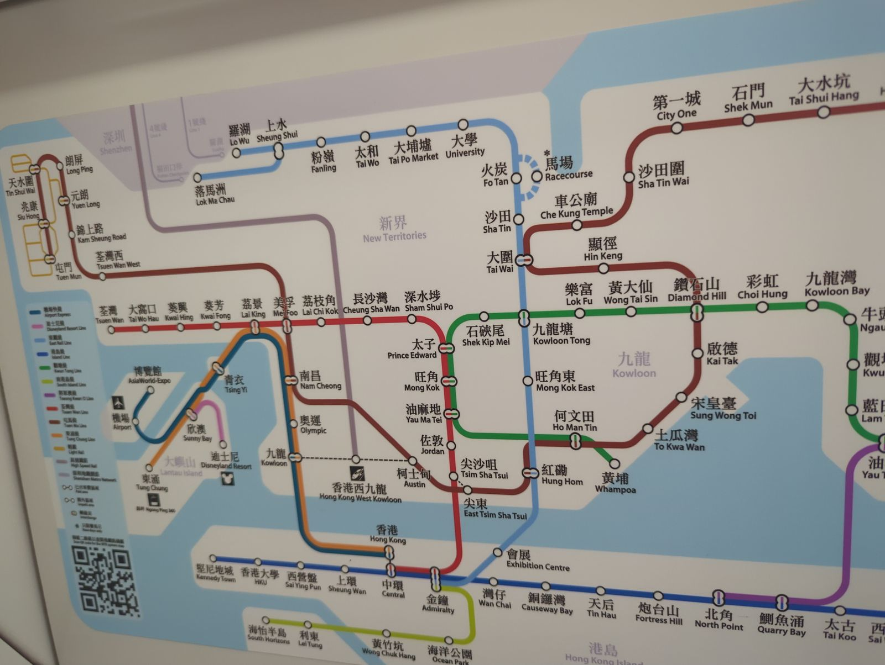
Tsim Sha Tsui, station on one end of Kowloon Park
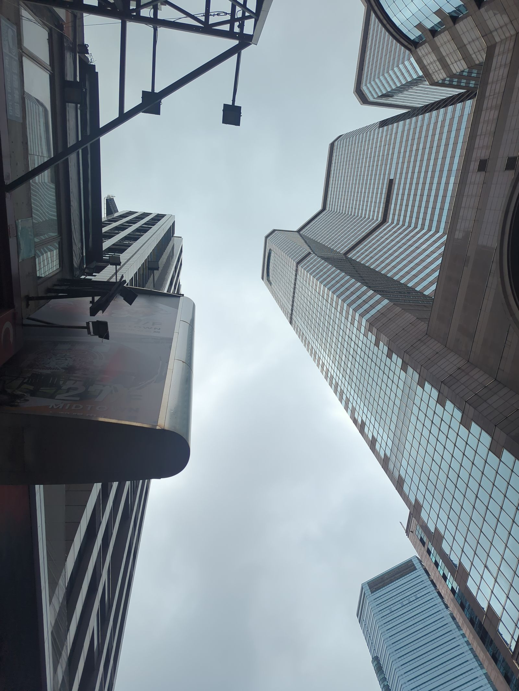
Downtown Hong Kong, near Causeway Bay
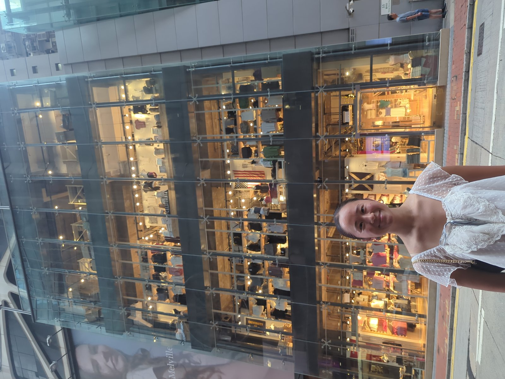
Brandy Melville's next to Times Square, Hong Kong
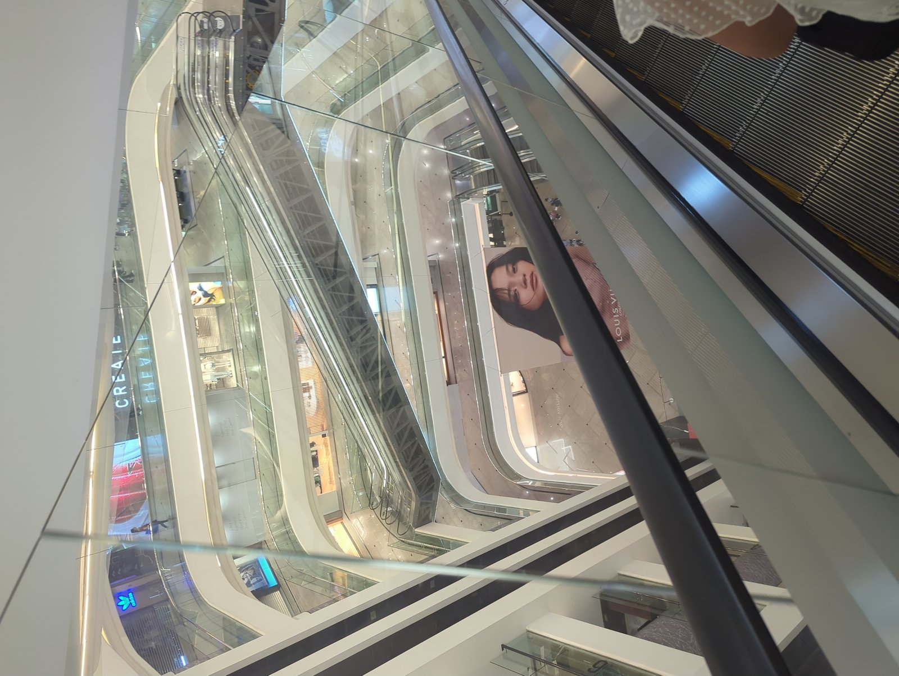
Arriving in Times Square, Hong Kong
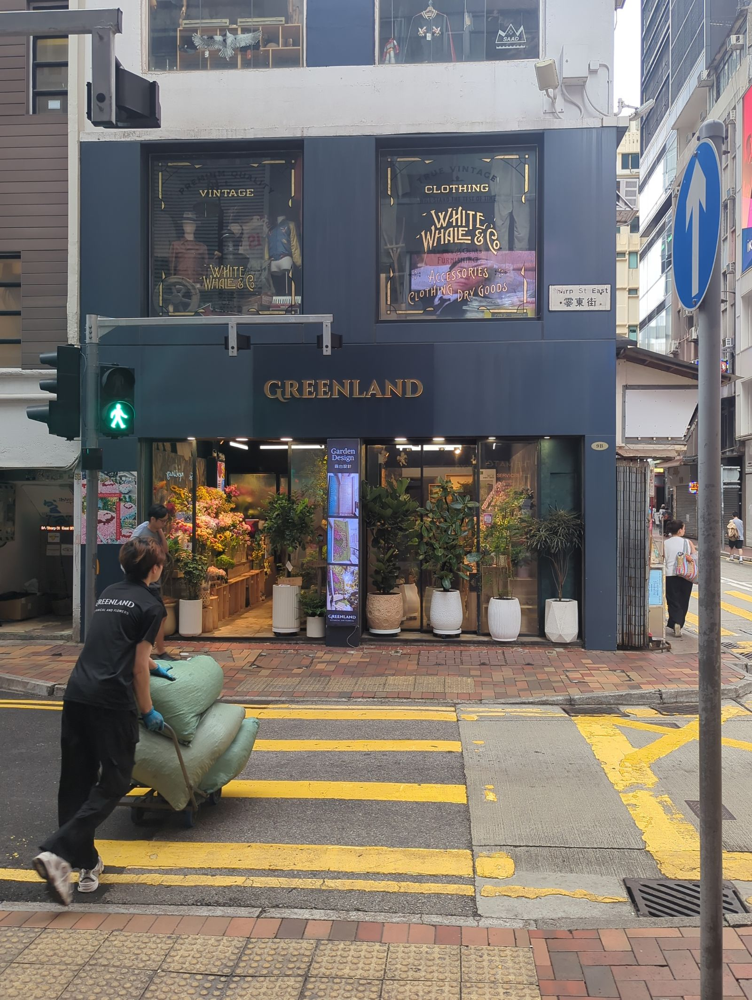
View while having Tokyo Matcha on Matheson Street.
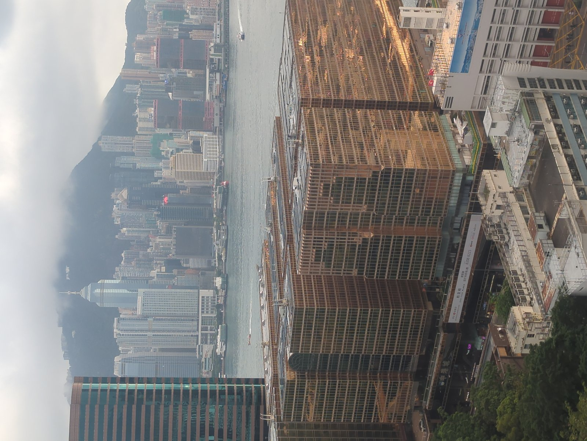
Dumpling lunch in the Jardine area
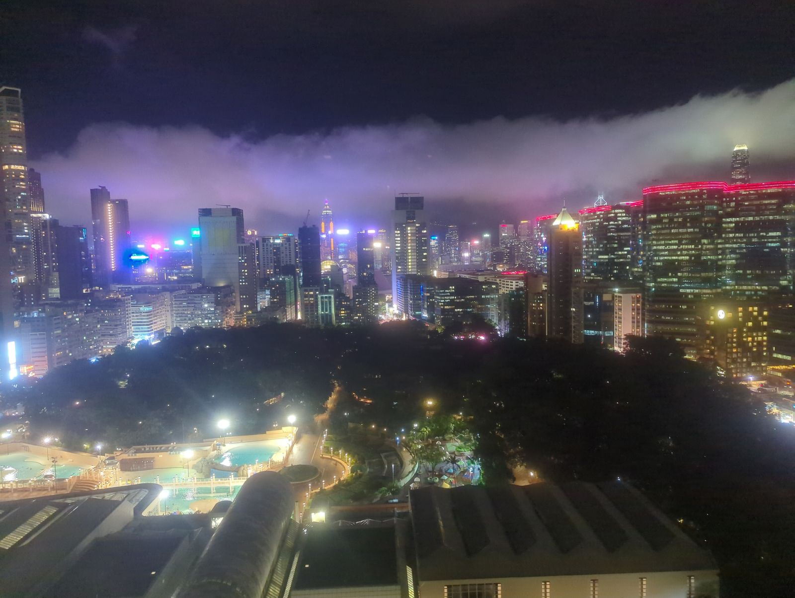
Hong Kong streets at night— neon and crowds
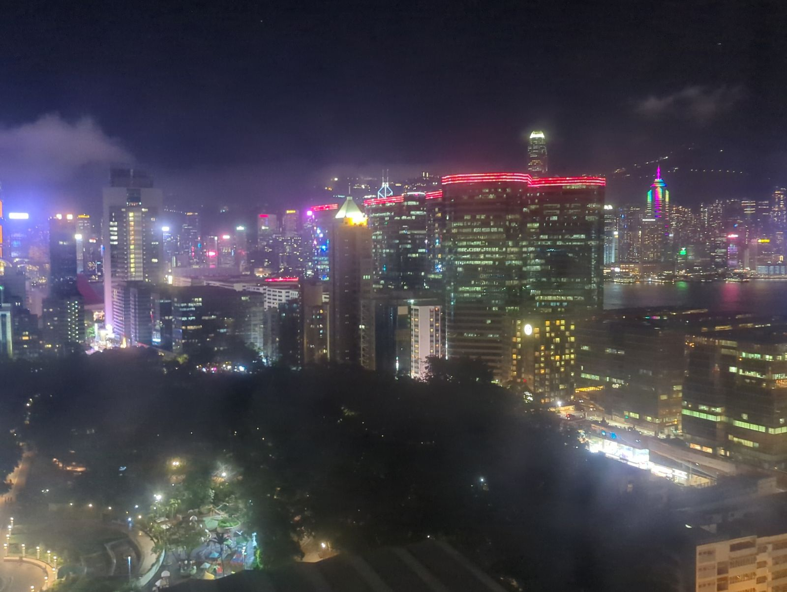
Night falls over Hong Kong Island
⭐ Highlight of the Day
Best Moment
Sitting in the small cafe (King's Dimsum) at Jardine's Bazaar eating local Chinese food while it rained
🔗 Related Pages
Hong Kong — city wiki page
Kowloon Hotel (near Kowloon Park) — where we stayed
🌤️ Historical Weather Report:
Chongqing, China — May 15, 2026
High: 28°C (82°F) / Low: 20°C (68°F)
Conditions: Overcast with occasional drizzle, light rain in the morning
Humidity: 75% | Wind: 8 km/h (NE) | Precipitation: 3 mm
[Source: climatological norms; China Meteorological Administration]
Companions: Bruce, Lois, Annalise
📝 What We Did
Speaker 2 0:03
day three of our travels to Chongqing, not the third day of being in Chongqing, but yeah,
Speaker 3 0:12
you want me stopping, yeah,
Speaker 2 0:13
okay, so once we woke up in Hong Kong, we went to breakfast, and after breakfast, we
Speaker 3 0:23
collected
Speaker 2 0:24
well. Breakfast was the traditional Chinese or Asian breakfast, in that it kind of includes all kinds of different breakfasts across the world, from American needs, such as pancakes and eggs and bacon to traditional Chinese breakfast, where it's noodles and dumplings to fruit and toast and all kinds of desserts and foods you can imagine. After we ate such a large breakfast, we headed to the train station that we were at the day before, and we went through the security and customs, and what made the train station special was that each floor was basically going through a different form of security, ultimately landing at the very last floor where the trains are, but before you could get to the trains, there was a waiting terminal where everyone could wait with their baggages until their call time was aired, and then they could wait in line and take the elevators down while we were waiting for our train. We, since we had special tickets for first class, we went into a lounge where it was just couches and tea and coffee, and it was just a quiet space to sit down before we had to board the bullet train. Once our train was called, we boarded the train, and it was two by two. The seats were fairly large and very comfortable, and we boarded the bullet train, and the bullet train took us to three different stops through China before it ultimately got to Chongqing,
Speaker 3 2:24
so for just a second, so we got on in Hong Kong, and there was like nobody on the train, and it wasn't super quiet, like you could even hear a pin drop, and we took out, and it only took us about 20 minutes before we got to even less to Shenzhen, and when we landed, or when we stopped at the train station in Shen Shen, a lot of people got on, so it completely filled up, and including the lady sitting next to me, I believe,
Speaker 2 3:00
yeah, so once we were on the train and we were heading towards Chongqing, we really went through a different, different kinds of landscape, from the urban city to just farm lands where there was older buildings and lots of mountains and just a lot of agriculture to then entering back into the large city of Chongqing after seven hours of being on the train.
Speaker 3 3:33
Can I say something about the train too? Just I'll let you guys talk about the snacks, but I just wanted to say that we did stop in Guangzhou, which I thought was significant, because we're, we were kind of retracing our steps with Annalise, and so that was kind of neat that we stopped at the train station in Guangzhou, even for just a little bit.
Speaker 2 3:58
Once we got to Chongqing. It was about 6o'clock 630 in the evening, and it was a lot cooler than when we got on the train in Hong Kong, and there was a mass amount of people. Many trains arrived to the Chongqing train station the same time we did, because we weren't quite sure how to get to the hotel and how to exit. We kind of had to follow people in front of us and how to exit the train station to enter the another, the other area where you can buy a subway ticket or go to local transportation, which is Uber, but they call it DD, and in China, or a taxi. Luckily for us, because you're having trouble to get through the first point where you have to exit for your train travel to mark that you exited the train. There was a US citizen in front of us, and we noticed he had to move over to a different section to use his passport, and so we followed him, and we were able to go through that section. Once we went through that section, we had to figure out how to ride the subway system, because when we purchased the train ticket from the last recording, which is called the Octopus Pass, we thought that we could use it in mainland China, but unfortunately we were not able to, and we misunderstood and didn't buy the pass that would be allowed for all different train subway systems throughout China, because of that and the language barrier, it took us quite a while to be able to figure out our options for transportation, once we were, we decided it was too late to try and do the 45 minute commute from the subway all the way to the hotel, because we would also have to walk, and we weren't familiar with the area quite yet. We decided to try and get a taxi using the app Didi, which is similar to Uber, but the app didn't work, and after 30 minutes of negotiating with people and figuring out what would be the very best, the easiest solution for the time being was to use the local taxi. The taxi took us from the train station all the way to our hotel, which was located in the modern tourist area, which is the downtown area of Chongqing, which was very convenient because it was near a lot of the sites that we were going to see while we were there. Once we arrived there, our taxi driver was very pleasant. He ensured that we got to our hotel safely, was very patient with us, and understood our needs when we came to our hotel. And we checked into our hotel, got to our room, and were pleasantly surprised by the look of the room, it was a two bedroom, one bathroom apartment with a beautiful view of the Chongqing city, but by that point it was about 9o'clock 830 at night, and we were pretty tired, and things were about to close for the night, so we decided since we haven't gone to China to McDonald's yet in China that we would get McDonald's in the Chongqing area. We,
Speaker 3 7:50
so I'll take over real quickly. We walked around the corner into Freedom or People's Square, right next to our hotel, just a block away, and we found a McDonald's. It was downstairs, and we went down and had our familiar comfort food.
Speaker 2 8:11
While we were in the McDonald's, we noticed many white people at the McDonald's, maybe not being American, but nevertheless still being a comfort for us being 8000 miles away, lots of families with children, that was what we noticed. Once we were finished with our dinner, we walked back to our hotel and got ready for the night.
Speaker 3 8:38
McDonald's was a big success because we were able to pay for it with Lois's WeChat app
Speaker 4 8:45
with him.
📸 Photos
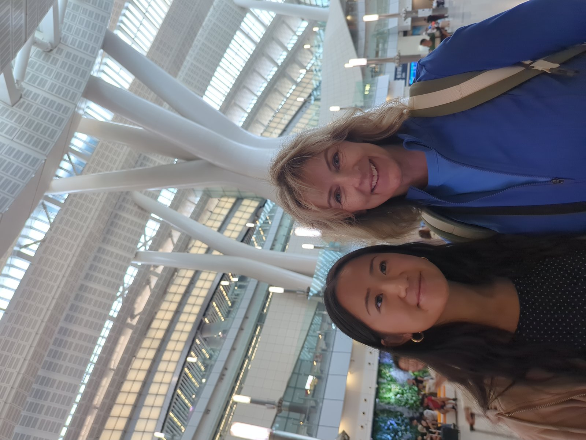
High-speed bullet train from Hong Kong to ChongqingChongqing skyline — first glimpse of the mountain cityChecking into the Chongqing hotel
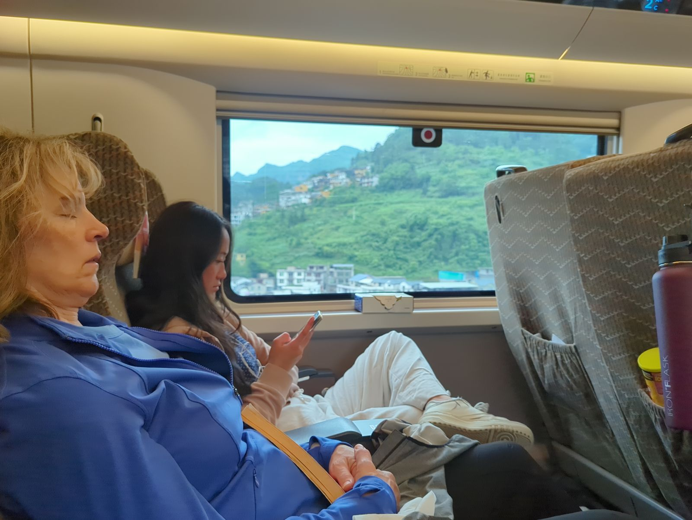
Evening walk through Chongqing streetsChongqing at night — the city of lightsLate night views from the hotel
⭐ Highlight of the Day
Best Moment
The bullet train gliding through the Chinese countryside — our first real glimpse of mainland China through the window. Watching the landscape transform from Hong Kong's tropical hills to the rugged karst mountains of Guilin and finally the urban sprawl of Chongqing.
🌤️ Historical Weather Report:
Chongqing/Fuling, China — May 16, 2026
High: 26°C (79°F) / Low: 19°C (66°F)
Conditions: Overcast and foggy, muggy throughout the day, reduced visibility
Humidity: 80% | Wind: 6 km/h (E) | Precipitation: 1 mm (trace)
[Source: climatological norms; China Meteorological Administration]
Companions: Bruce, Lois, Annalise, Issa (tour guide)
📝 What We Did
Speaker 1 0:01
Hello, this is the China trip recap, part three, starting with the date of may 15, I believe, or was it the 16th? Okay, what do you remember, Ann Lois,
Speaker 2 0:22
about that? Okay, Isa picked us up. Yes, so we woke up early in the morning, and we had plans to meet with a lady named Issa around 9am So we grabbed breakfast at the dining area where the breakfast was served on the 12th floor.
Speaker 1 0:43
Dad was mad at me because I bought him a breakfast.
Speaker 2 0:45
No, this was complimentary.
Speaker 3 0:48
That was the day before the
Speaker 2 0:50
breakfast had a variety of multiple foods, just like the other hotel did. Once we were finished, we headed downstairs and tried to see where Issa may be, while we were standing there, a young lady came outside, and we figured out that was our tour guide, Issa. Issa was very nice. She welcomed us with a great smile and walked us down to the downstairs parking garage.
Speaker 3 1:20
Can I interrupt right now? I just want to say that Mom said, does Paula White have a twin? And I remember that we, when we saw Issa, and I also remember that we prayed together at the end of the meal, that was significant.
Speaker 2 1:38
Okay, while we were walking down to the parking garage, we walked over to her SUV, and her SUV was special because it was one of the Chinese electric car companies, BYD, which looked similar to a Land Cruiser, the exterior of it. Once we got inside, it was extremely high tech and very nice. Her AI bot, which helped her navigate her maps, she would say Ni Ha Shima, and it would reply back meow, meow, meow. Throughout the day, we thought that was pretty funny and cute, the way that she would interact with her bot to try and navigate us to the next destination. As she drove us through Chongqing, we got to know Issa and a little bit of her history, such as how she got a degree in civil engineering, structural engineering, and how her interest in being a tour guide led her to work with a marketing company to deliver commercialized tours with a group, and then she decided that after her experience with this group that she would do her own private party, where she would sell tourist excursions for people that would hire her privately. As we drove to Foo Ling, which was about an hour and a half to two hour drive, we saw the beautiful mountains and the landscape outside of Chongqing City. When we entered from Ling, it was lined with beautiful flowers and all kinds of older buildings that were there, and some newer buildings that were built since Mom and Dad, Lois and Bruce were there. We drove up a few windy roads up a mountain to get to the actual orphanage, which it was about maybe like 1030 11, about mid morning, the orphanage and the orphanage was, is now a kindergarten at the time that we went. It still had the structure, the exterior of what it once was 20 years ago, with iron arched fence with two columns and a courtyard and a building with outside exterior doors. The kindergarten had a few things that were similar to what was seen in the gotcha day videos, such as the rooms that were used for sleeping were still used for sleeping, but for naps. The classrooms are lined with lots of artwork and gardening and crafts projects the kindergarteners were working on, and we got to talk to a few ladies that were the maintainers of the building for the kindergarten that remembered the kindergarten being an orphanage at one point in time,
Speaker 3 5:04
just wanted to say, too, that it was Saturday, so there were no kids at the kindergarten. Someone let us in, so we could walk around.
Speaker 2 5:13
So, after we were able to walk around and get to see what the old orphanage is now like today we walked around the block near the Foo Ling orphanage, where we bought some seasoning, the Sichuan Fu Ling seasoning for us as well as a friend Su Chien, and then we also walked around and found some other interesting places.
Speaker 3 5:51
I bought some mangosteen.
Speaker 2 5:53
Yes, we found may go mango stains also at a little market outside of the orphanage.
Speaker 1 6:00
Excuse me, and was the seasoning the traditional pickled mustard seed or mustard root? Yes, that is known for that area.
Speaker 2 6:12
Yes, after we did our tour, we Isa, our tour guide, drove us to the other orphanage, which was for special needs children and adults nowadays, because there's no more normal non disabled children at the orphanage, so we got to see the new site, and really just only took in the views of Fu Ling once we got up there. Once that was complete, Issa took us to a wonderful lunch that was more regional to Foo Ling, which was a street lunch place where we got to sit on outside stools, and Issa and I created our own sauces with boiled chili oil and all kinds of different MSG and different spices. We ordered a few different dishes, but it really was the town signature dish, where it was similar to tofu, you would cut a portion of the tofu, place it in your sauce, and eat it along with the rice and greens and other chicken that you ordered. The total came out to be about $15 which really shocked us for the high quality and the amount of food that we were able to eat in full link, and it was all spicy, so very Sichuan traditional lunch meal. Once we were finished, Isa gave us some suggestions of our afternoon activity, since we had her for a little bit, little bit more, till she had to go, and she suggested to go to the temple in Chongqing, that a lot of people enjoy going to, due to its beauty and historical meaning to the city. It took about two hours to get to the temple, driving distance from our lunch destination, and there we, it was about our hike walk up some stairs, and there were many multiple pavilions of temples for different I different, like religions for people to do their rituals, and once we got to the very top, unfortunately, it was a pretty muggy, foggy day, so we weren't able to see a whole lot when it came to the scenery, but it was a good hike to get us moving, and just to be able to see what we could see of the skyscrapers that afternoon. Once we walked down, Isa drove us back to our hotel and gave us multiple ideas of what we could do during the night and the rest of our stay in Chongqing, she was very nice, and her English was incredible for the fact that she did not major in English in college. Once we got back to the hotel, we sat down and refreshed for about 30 minutes, and we continued our day and decided to go and try and see the drone show that evening. We weren't sure if the drone show was going to be able to happen due to it, the potential rain, but we tried anyways. We walked down to get some dinner, and we decided to pick up that dinner and not eat at that place, but the dinner was at the People's Square Mall in a food court. I ordered some Sichuan noodle soup, and Mom ordered, wasn't in a fried rice, fried rice, the because we were so short in time. I asked the lady that was preparing the meal if we could take it to go, and she was very kind, and she quickly packaged it up in a reusable bag, which surprised us, and very high quality to go packaging, and we ran outside of the mall to the nearest traffic area in the People's Square to try and find a yellow taxi, or as I like to call them, the yellow Ferraris, due to their chaotic nature of driving once our taxi got to the bridge, where he decided would be our destination. We got outside of the taxi, walked across the bridge that was the iconic bridge in Chongqing that has red lights on it and wires near the Chongqing Theater,
Speaker 3 11:22
Grand Theater, Grand Theater.
Speaker 2 11:24
Once we walked down, which was about a 20 minute walk to the Grand Theater, the show was about to begin, but it made it very easy to find the drone show, because, like our tour guide, Issa said, just follow the group of people and you'll be able to find the drone show, so we originally were one in one area of the theater, and we realized people were shifting to another area, and so we just followed them, and we made it just in time, because the drone show was about to begin. The drone show had about 1000 or more drones creating beautiful designs and several different colors in the sky with the city skyline as the background, which made it an incredible experience for us Americans. Once we were finished with the drone show, we walked all the way back to our hotel, which was much closer than we thought. After riding the yellow Ferrari, we realized we could have walked, and we had a good night, and that was our day to it. Well, technically, day full day one in Chongqing,
Speaker 1 12:35
and I thought it was going to be a drum show, but I was pleasantly surprised it was not,
Unknown 12:40
I.
📸 Photos
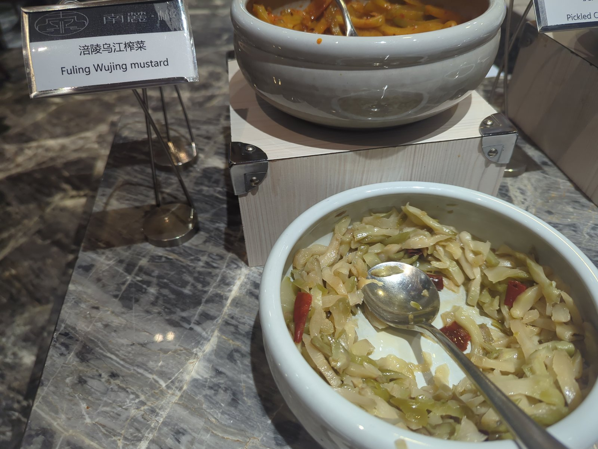
Morning drive to Fuling — mountains outside Chongqing
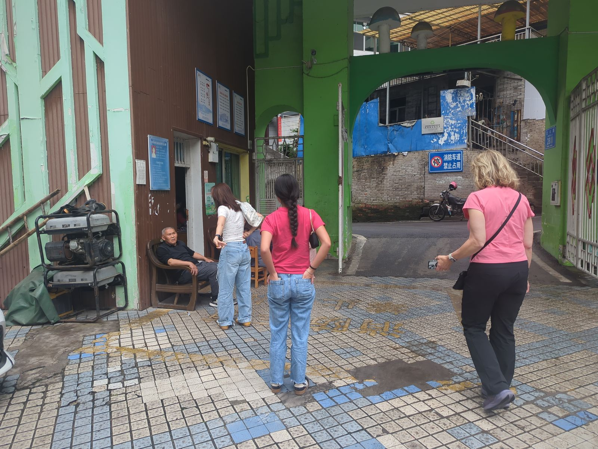
The Fuling orphanage — now a kindergarten
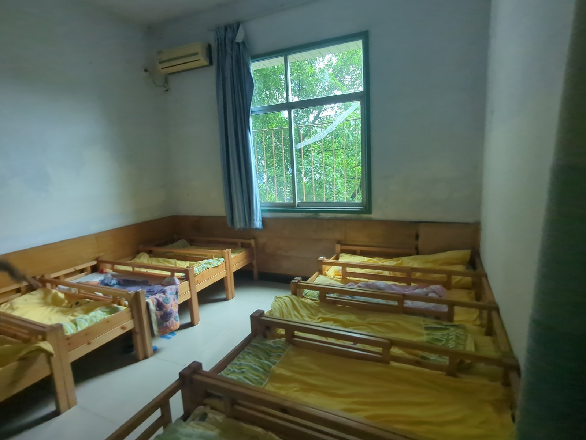
Walking the streets of Fuling, where it all began
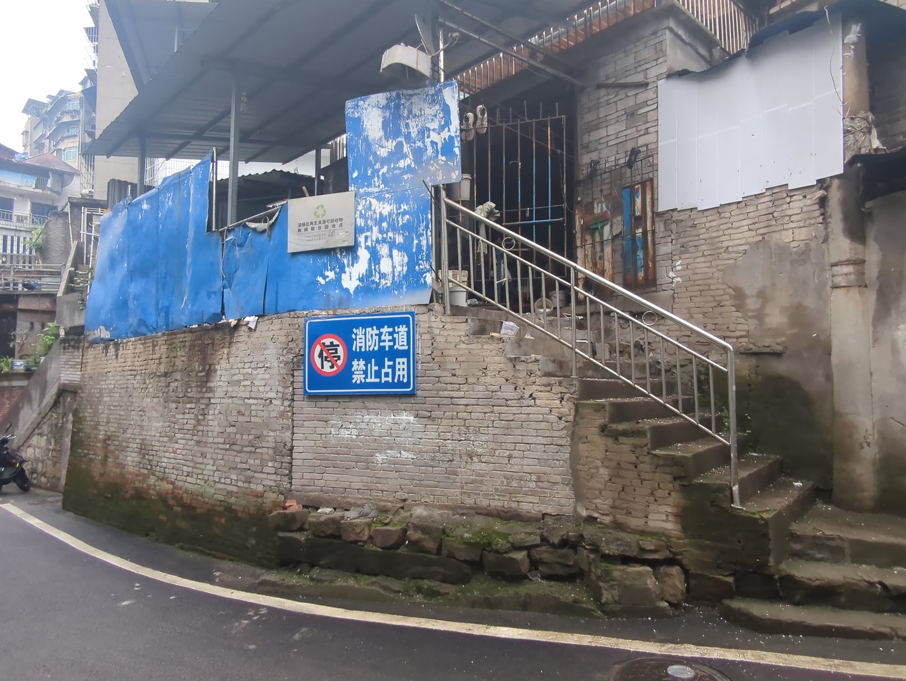
Buying Sichuan Fuling seasoning at the local marketTraditional street lunch — tofu, chili oil, and rice
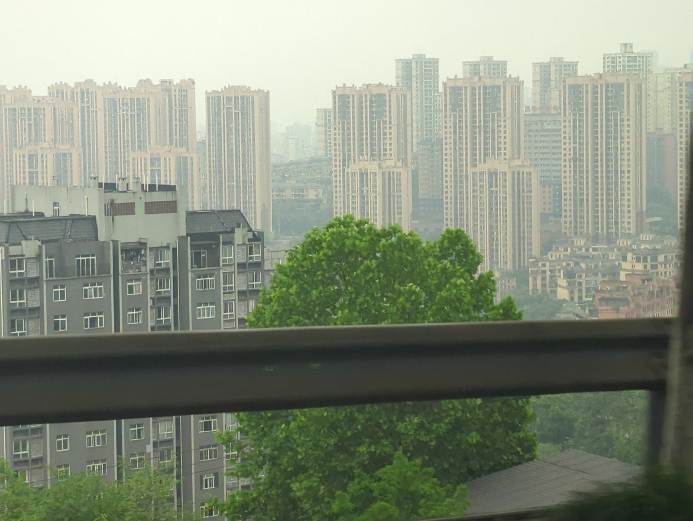
Drones over Chongqing — the spectacular night show
⭐ Highlight of the Day
Best Moment
[The single thing you'll remember most from this day. One sentence to one paragraph.]
🔗 Related Pages
Chongqing — city wiki page
Fuling — Annalise's birthplace
Chongqing hotel (12th floor breakfast) — where we stayed
🌤️ Historical Weather Report:
Chongqing, China — May 17, 2026
High: 30°C (86°F) / Low: 21°C (70°F)
Conditions: Partly cloudy, warm and humid, hazy sunshine
Humidity: 70% | Wind: 9 km/h (SE) | Precipitation: 0 mm
[Source: climatological norms; China Meteorological Administration]
Companions: Bruce, Lois, Annalise
📝 What We Did
Speaker 1 0:00
And this is the China trip recap, part four, Sunday morning, the 16th 17th of May. So we slept in a little bit, that's what I remember, and then had some time to read, and then we had breakfast at the hotel, and then planned out our day, which was exciting.
Speaker 2 0:27
Once we were finished with our breakfast festivities, we headed out of the house and took the subway, which was about 13 stops all the way to the stop called the zoo. The zoo was better than we even thought it would be. Issa, our guide, told us the zoo is going to be a little old, but the panda experience is worth it. So, going into the zoo, we really mentally prepared, only to see the pandas, and the rest of the experience may not reach our desires of what a zoo day may look like, but our expectations were
Speaker 3 1:11
too low,
Speaker 2 1:12
were too low, because the zoo was huge and had multiple sites for us to see, other than the pandas, when we walked in, the pandas were sleeping and were out and ready for the people to enjoy, but as the day grew, went past, we, the pandas, were also a little bit more active, closer to their lunch time, I think their caretakers placed fresh bamboo for them, so they were a little bit more active after eating a little bit and resting, and since they were a little bit more active, that created a little bit more hubbub and adventure for the day
Speaker 3 2:01
in the middle of the morning we had some dessert and coffee in a little cafe where we could sit and watch the pandas through the glass and we went to several gift shops
Speaker 2 2:16
and bought lots of panda souvenirs once we were finished looking at the 25 giant pandas, chung ching hosts there at the zoo, they, we walked over to the red panda exhibit and got to see the red pandas in their environment, and we also saw the white and red tigers, rhinos, fish, gorillas, meat bears,
Speaker 3 2:52
all
Speaker 2 2:53
kinds of different animals outside of the panda bears, but as we were trying to leave around noon, the panda bears were even more excited than they were when we saw them last, so we had to give them one last glance before we officially left the zoo. Once we left the zoo, we found this lunch place called Chinese Burgers, which were deep fried chicken sandwiches, similar to maybe what Chick-fil-A is like, and we ate lunch there. After that, we took the train back to the hotel. Once we were in the hotel, we dropped off all of our souvenirs and got ready for our afternoon in Chongqing City. Once we left the hotel. We tried to visit the old part of the Chongqing city, but it was a little bit less. It was not as impressive as we thought it would be, just an older version of a city. And then we walked over to the Raffles City Mall,
Speaker 3 4:02
we went down some very steep stairs, multiple sets of them.
Speaker 2 4:09
Yes, once we reached the Raffles City Mall, we shopped and eventually went into a local perfume place where Mom bought a bottle of perfume, and I bought a few car hanging scents for roommates and friends. After that, we tried to find the elevator that would take us to the view of the Chongqing city. Once we found the place that could take us to the very top. We discussed whether we wanted to go up or not due to the scary nature of it being a 360 glass bottom experience of the city, but after some negotiation and convincing, we eventually went up.
Speaker 3 5:05
He eventually convinced Bruce that he could do it.
Speaker 2 5:10
Once we got up there, it was perfect timing, because it was about to be sunset, so we could see the beautiful views of the sun setting in Chongqing City. We enjoyed the views and analysts enjoyed the fun nature of the glass bottom view of the deck, as well as the city, the city skyline. Once we were finished and enjoyed taking photos up at the viewing deck, we went down to the very bottom, and we walked outside of the mall, and saw the Hung Ya caves. We walked over to the Hongya caves, which was about 15 minutes walking, and we took photos there, and we just.
Speaker 3 6:00
there's so many Chinese tourists that we were, we had to hold on to each other to keep from losing each other. Mom and I
Speaker 1 6:08
wasn't there, like a river cruise just docked there also,
Speaker 2 6:17
because we were at the very bottom, we had to walk 21 floors to get back to the very top, which was the street level from the Hongya caves, and from there we walked. It was about 730 so it was later at night now, and we were ready for dinner. Dinner that night was the plan to go and get hot pots, so we went to the hot pot place, and once we got there, it was the air was very spicy, so it was a prelude to what we were to experience for dinner. Issa told us that we should get a yin yang pot, which is one side the traditional spicy hot pot, and the other side a mushroom soup, which is not hot, so you can make it as spicy or as not spicy as you'd like. After that experience, it was very fun, but because it was so spicy, we decided we needed to get some ice cream, so we walked back to the People's Square, walked back to the McDonald's, where we began our Chongqing adventures, got an ice cream cone, walked back to the hotel, soaked in the views, and prepared for our next adventure, which is Shanghai. The next morning,
Speaker 3 7:40
forgot a.
📸 Photos
Chongqing Zoo — pandas waking up for the day
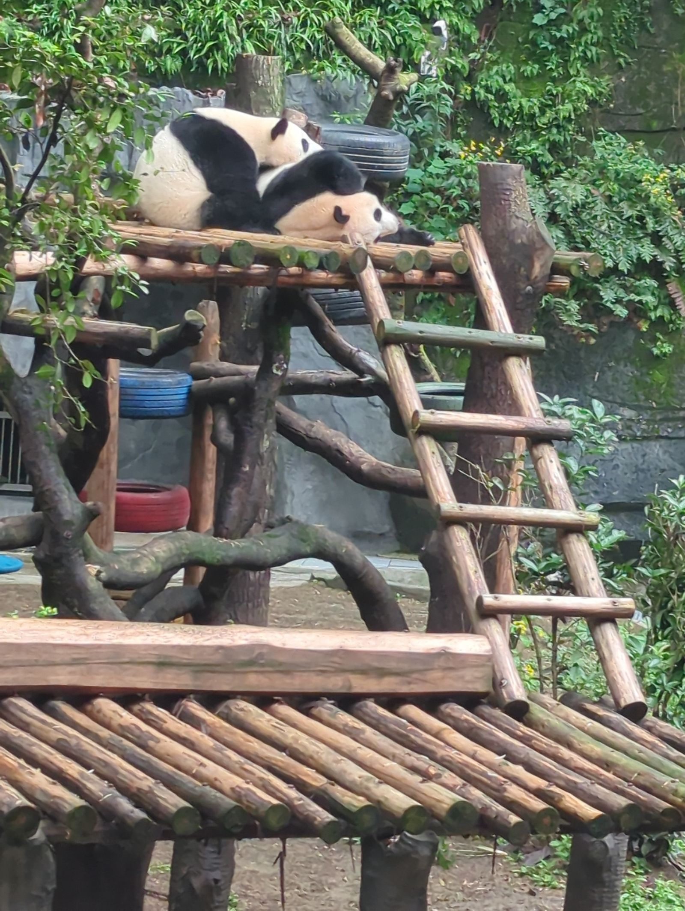
Up close with the giant pandas
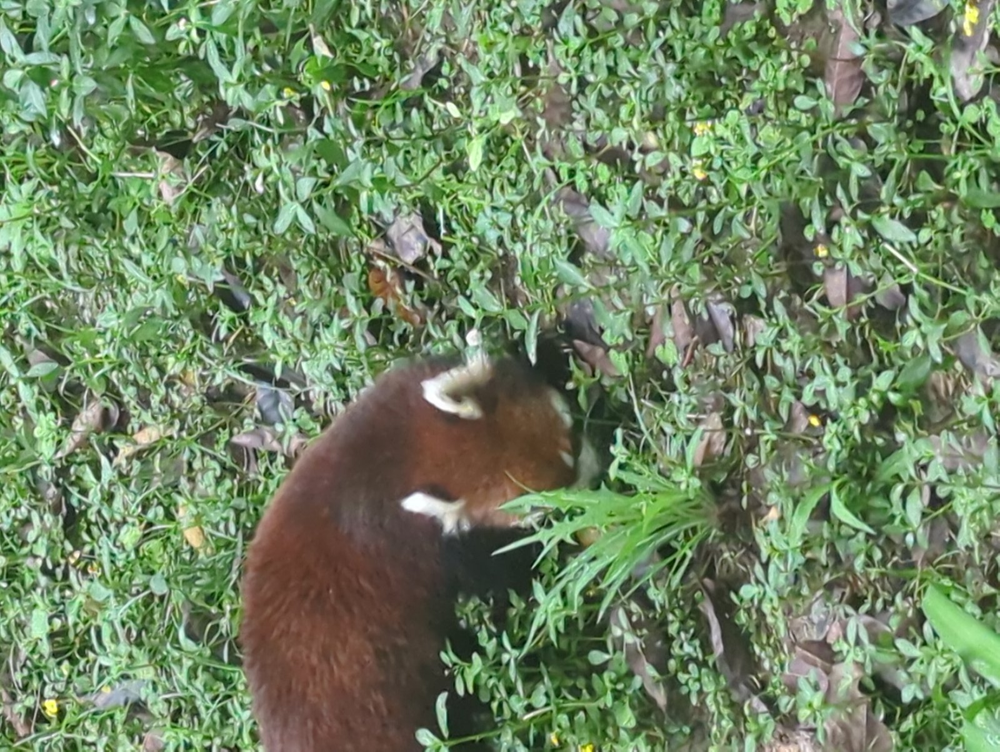
Hongya Caves — the stilted wonder of Chongqing
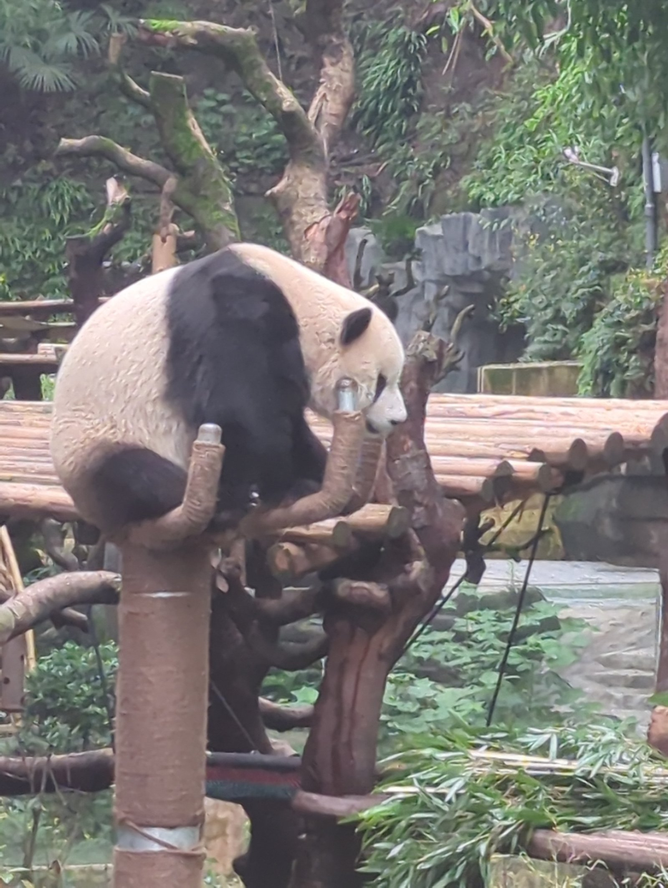
Sunset from the Raffles City glass-bottom deck
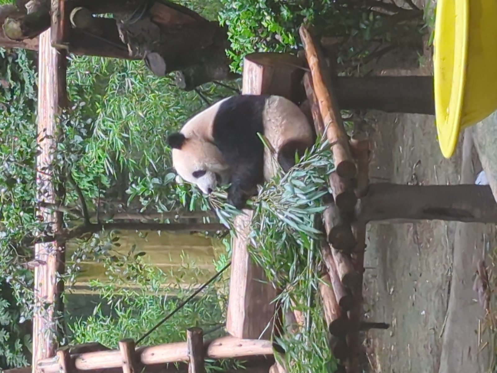
Sichuan hot pot dinner — yin yang pot
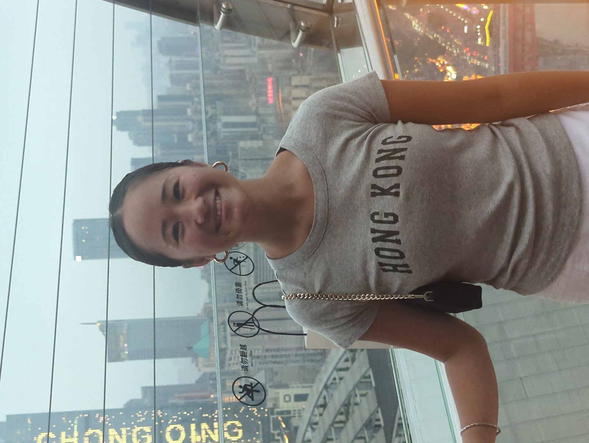
Chongqing city lights after dark
⭐ Highlight of the Day
Best Moment
[The single thing you'll remember most from this day. One sentence to one paragraph.]
🔗 Related Pages
Chongqing — city wiki page
Chongqing hotel (12th floor breakfast) — where we stayed
🌤️ Historical Weather Report:
Chongqing, China — May 18, 2026
High: 22°C (72°F) / Low: 17°C (63°F)
Conditions: Rainy morning, overcast with moderate rain tapering by midday
Humidity: 88% | Wind: 10 km/h (N) | Precipitation: 12 mm
[Source: climatological norms; China Meteorological Administration]
Shanghai, China — May 18, 2026
High: 24°C (75°F) / Low: 17°C (63°F)
Conditions: Partly cloudy, clearing skies in the afternoon
Humidity: 68% | Wind: 14 km/h (ESE) | Precipitation: 0 mm
[Source: climatological norms; China Meteorological Administration]
Companions: Bruce, Lois, Annalise
📝 What We Did
Unknown 0:07
And it was May Monday, may 18, and we got up early, did not have breakfast at the hotel, but made our way out to the street to hail a taxi in the rain, so we could catch our flight to the airport on en route to Shanghai, and I'll let Analise carry on from here
Unknown 0:39
once we were heading to the well, we woke up, and after we checked out, we tried to get a taxi. It was a pretty rainy day in Chongqing, so it was harder to find a taxi because of the rain, but also because it was peak hours to go to work, so we stood out in the rain, maybe for 10 minutes, just trying to hail taxi, and we finally got one. Once we got the taxi, we had to do a little bit of some rapid translation to inform him where we were trying to go. Once we informed him that we wanted to go to the Chongqing Airport to Juniao Airlines, he took us to the airport.
Unknown 1:31
The airport ride in itself was pretty adventurous, because it was raining pretty heavily, but the yellow Ferrari did not put its brakes on, it pressed forward and continued to do the chaotic driving that it's accustomed to, even on dry days all the way to the airport.
Unknown 1:55
Due to the chaotic driving, Annalise got sick, but we pushed through and made it to the airport,
Unknown 2:08
we once we made it to the airport, we, we
Unknown 2:13
checked our bags, and we
Unknown 2:19
then went through security, and then through security, we walked to some escalators. These escalators took us down to a basement floor, where we took a train, a subway with other passengers to a different terminal. That terminal took us to the Junia area, where we would board our plane, but it had many places for us to enjoy shopping or eating wise before the plane was to board. It was brand new and almost empty. It felt like, yeah, it was early in the morning.
Unknown 3:00
There we found the Canadian brand Tim Horton, and we decided to get our breakfast and coffee in for the day.
Unknown 3:09
Once we got our fill in, we decided to split, and Bruce would watch over the bags while Lois and Annalise went to go and see any souvenirs or anything that there was in the terminal we were in.
Unknown 3:29
I just wanted to say that Tim Hortons felt different because it was a little western and we were able to use our credit card and we just hung out there for a while, was very nice and relaxing while Lois and Annelise were finding souvenirs and little trinkets at the airport, they found a shop that sold some magnets and other little items, and they purchased them, and then once they were returning back to the terminal, they picked up some water bottles, and by the time they sat down, it was about time to board. The boarding process at Chongqing was a little different than the average boarding process in the United States, in that they just let, they informed everyone that you could board, but once you boarded the plane, the plane sat there for about an hour until it left.
Unknown 4:27
Once we left the gate, it took a few minutes for it to actually depart, and it was about a two hour flight to Shanghai.
Unknown 4:41
Once we landed in Shanghai, we got off the plane, and it was quite a walk to get to the baggage claim, because our baggage claim was the very last baggage claim that you could possibly go to at the Shanghai airport.
Unknown 4:57
I just remembered something that I'd forgotten, thanks to you, just as we were waiting at the airport in Chongqing, they announced it's time to board. There was nobody there. There were like eight or 10 people, that's all the receipts for, and there was nobody there when they said it's time to board, and then all of a sudden, once they like announced it, people just started showing up right into the line, and I remember that too.
Unknown 5:29
Also, Junior Airlines was like Disneyland, it was airlines, it was purple seats and pink ambient lighting, and all of the flight attendants were dressed in pink suits, and it was just the same hairdo, kind of a cute little thing, but a very, very small plane, and you had a hard time with your knees were just not fitting at all in particular.
Unknown 5:59
Thankfully, it wasn't too long. Yeah, anyways, we got to our destination in Shanghai. Picked up the bags, just like I said, the baggage claim was very far away, and Shanghai already had gave us a great impression, just in the amount of English speakers we met within the first hour of landing we saw a tourist booth and they explained how we should purchase our subway pass for the next three days along cash along with riding the magnetic train high speed train to our to our stop that we needed to then transfer to the subway
Unknown 6:47
young man road, yeah. Stop, yeah, and the maglev train, yes. So we got our tickets. I remember how we got there.
Unknown 6:57
Oh, we bought, we actually met a guy that spoke in English that worked for the the metro, he came out in front of us, and he told us where we could buy tickets for three days, and we bought them right there.
Unknown 7:14
He spoke English very quickly and very well.
Unknown 7:19
And then we went across the way and bought our maglev tickets, and then I don't remember how we got there, but then we went down into a special area where the maglev train was, and waited, but not very long. Yes, once we boarded the maglev train, it was a
Unknown 7:41
very, it was extremely fast. It went about 180 miles per hour, which is about 301 kilometers per hour.
Unknown 7:52
Once we got to the stop that we needed, we transferred to the subway, and we rode the subway all the way to our stop.
Unknown 8:04
Our stop was about one kilometer to our hotel. We had to make some changes in the subway, and it was a kilometer, and it was called by John Ling Road.
Unknown 8:18
Yes, which is about.. so once we got to that stop, it's about one kilometer from the hotel, which is about half a mile walking distance.
Unknown 8:30
We got to the hotel, and the format of the room was Japanese style, but really it was just mattresses on the floor, but it was a clean room.
Unknown 8:43
We got ready for the night, and we took the subway again, and we went out to Nanjing Road to experience what it would be like, and we got a lot of walking in because we walked a half mile, and then Annalise remembered that she didn't have her subway card, so we walked back a half mile, and then back a half mile to the subway station, and then it was about dark, I think, about that time, but somewhere in the subway, and we, we came out at some kind of park, I forgot, people's, people's
Unknown 9:22
snazzy that's where we went back in, but I don't know where we came out.
Unknown 9:26
Anyways, we came out at this park, which is probably near the U Gardens that we weren't familiar with, but we would have known the next day.
Unknown 9:37
But we walked through Nanjing Road, which is near the Bund. We didn't walk all the way over to the Bund that night, but we found a place to eat after about an hour of walking.
Unknown 9:54
Ate at the place, found some ice cream, and then decided to return back for the night dinner. We ate at this Chinese food place. I ordered some pork steamed bows soup dumplings.
Unknown 10:12
My mom ordered some noodle soup, and then beef noodle soup, and my dad ordered some crunchy beef noodles that were good, yeah, they were good, but didn't realize they were crunchy. The experience overall was what was needed at the moment, just some dinner and a sit-down place, and mom thought I didn't like the food, so she was, and she thought, because I was confused about what was ordered, she thought I was trying to switch her food with mine, and she's still to this day hasn't gotten over that,
📸 Photos
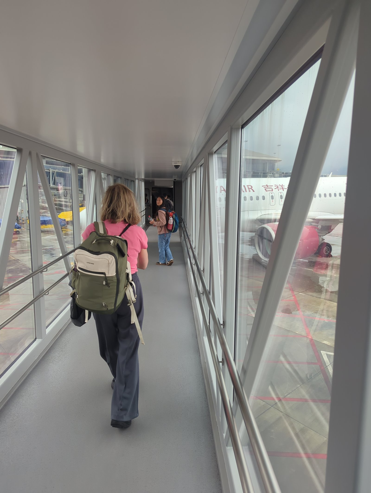
Rainy morning — hailing a taxi in Chongqing
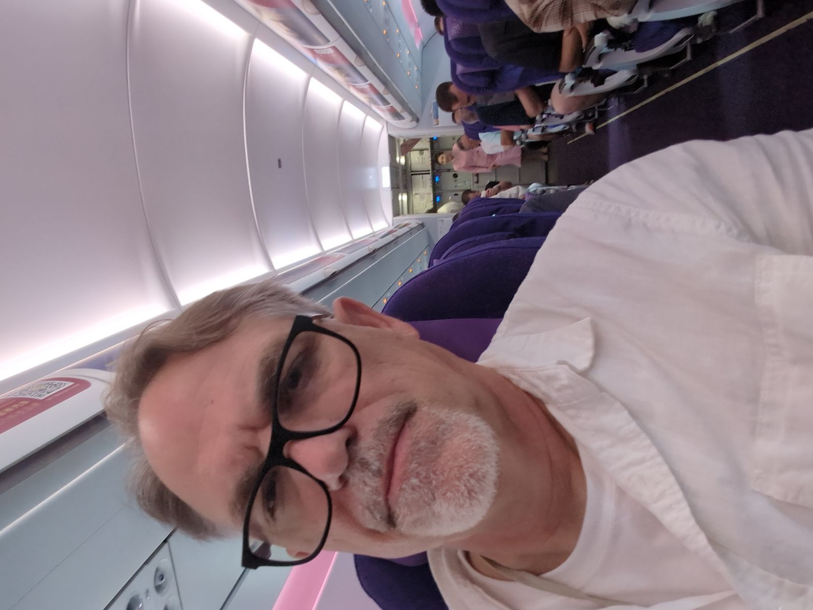
Tim Hortons at Chongqing Airport — a taste of the west
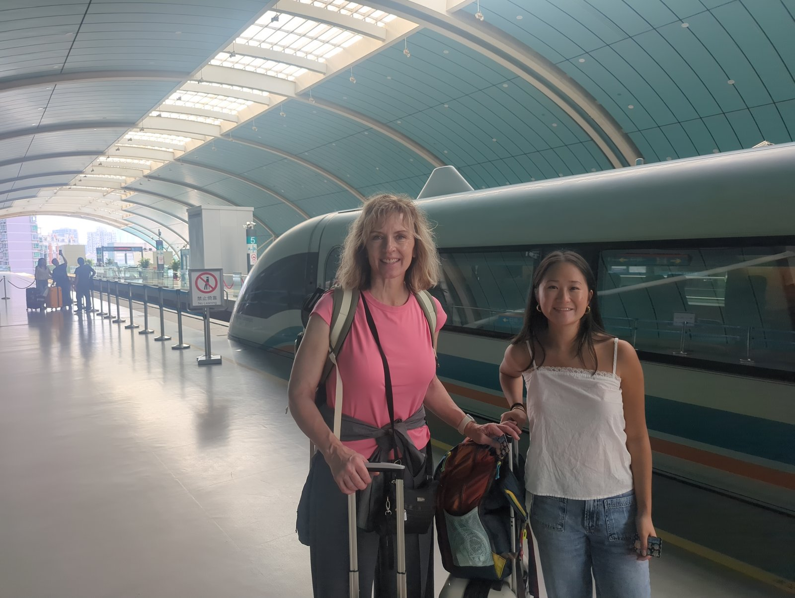
Maglev train arriving — 300 km/h to Shanghai
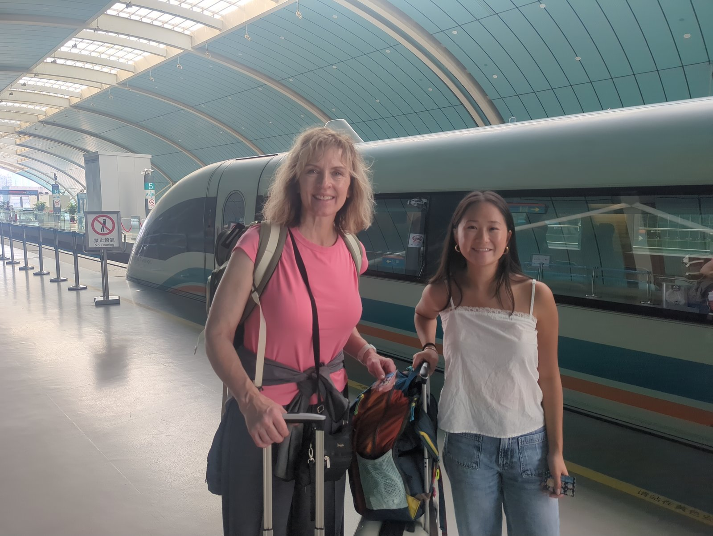
Shanghai at first sight — Nanjing Road by night
⭐ Highlight of the Day
Best Moment
[The single thing you'll remember most from this day. One sentence to one paragraph.]
🔗 Related Pages
Chongqing — city wiki page
Shanghai — city wiki page
Japanese-style room near Yongling Road, Shanghai — where we stayed
🌤️ Historical Weather Report:
Shanghai, China — May 19, 2026
High: 26°C (79°F) / Low: 18°C (64°F)
Conditions: Partly cloudy, light afternoon sprinkles and scattered showers
Humidity: 72% | Wind: 13 km/h (ESE) | Precipitation: 2 mm
[Source: climatological norms; China Meteorological Administration]
Companions: Bruce, Lois, Annalise
📝 What We Did
So then we went back to the hotel, and we had a good night's sleep. Woke up in the next morning, and we were able to have breakfast at the hotel, the Wassam International Hotel.
Unknown 11:17
They had the best steamed broccoli ever, and it was a wonderful breakfast. From there, we had a big day planned, and it was primarily for shopping with Annelies, and we had a Brandy Melville Shanghai to go visit.
Unknown 11:35
And then, what was the name of that shopping district,
Unknown 11:41
Awful Road, and and Tienza Fang,
Unknown 11:49
so that was fun. That was where we found silk scarves and some different things. Yes, can it be still on this recording? Yeah, we'll even pass it once. Once we were finished with Tanzanfang Road, we took all the subway. Tanzan Fang was a big event, like you guys were had. It was one of the best experiences of the trip, don't you think? Yes, we purchased majority of our souvenirs, there, like Mom said, we got a lot of scarves, perfumes, different clothing, all kinds of different souvenirs we thought people would enjoy, and we would enjoy once we returned back to the States.
Unknown 12:36
I bought some tea and did some tea testing. Yes, that took a good majority of the morning, all the way almost to the early afternoon.
Unknown 12:46
Once we were finished with Tianzi Feng, we took a subway ride to On Fu Road.
Unknown 12:53
On Fu Road was a little bit outside of the city of Shanghai. It was the upscale area of Shanghai where it had quiet roads that were clean, lined with beautiful trees, and just painted in beautiful white, which made it very appealing.
Unknown 13:13
Once we were, while we were walking down On Fu Road, enjoying the sights, we, the ultimate destination was to the Shanghai Brandy Melville, so I could pick up my souvenir shirt there.
Unknown 13:28
While we were finished shopping there, we decided to go to a cafe next to the store to get a pick-me-up coffee and pastry, which was apple tart.
Unknown 13:48
Once we ate that tart, we walked down the Wasse, or the sorry, the On Fu Road near the Flat Iron Manor, which we didn't visit, but it was on that same road, and walked near the library. The library then next to it had a subway stop. Yes, it started raining just as we got there. Yes, it started to sprinkle, and it made us a little nervous. So next goal after riding the subway was to purchase umbrellas, but we actually didn't need the umbrellas for the rest of day, but we didn't realize that at the time.
Unknown 14:23
Once we got out of our, so from the subway we headed to the Yu Yong Gardens.
Unknown 14:31
Yeah, stop at the Yu Yong before we entered the Yu Yong Gardens.
Unknown 14:38
There was plenty of multiple, there's plenty of shops for us to go to. One of those shops we stopped at had umbrellas we could purchase, and a few other items, cherry tea, and by that time it was lunch, and Annelies was very tired, and so the quickest thing to get was the McDonald's, right in front. So we popped into the McDonald's, and where was that?
Unknown 15:11
That was right next to the umbrella place. And then we entered the Yew Gardens. The Yew Gardens, remember, it was really busy, and there was like a homeless lady, it was downstairs too. Yeah, you were wondering if you should check if she..
Unknown 15:28
yeah, yeah, I forgot all about that. Thanks for reminding me. The U Gardens had there.. we went across the street to once we left McDonald's. Is it still on?
Unknown 15:38
We went across the street, and you guys went in a department store, and I waited outside for a while. I think maybe you went to use the bathroom, and then we came out and oriented ourselves as to which direction the U gardens actually were. And then we walked down the street, and then immediately we were in, we found just these alleyways of maze of shops and people everywhere.
Unknown 16:08
Yes, so we navigated ourselves to actually the garden portion that was to the public without paying, had some steel artwork of lily flowers pads, and it also had some real flowers, hydrangeas, and koi fish.
Unknown 16:28
We walked through and enjoyed the site, and then the first tea house in Shanghai. We walked through it. Yes, we walked through the tea house, and then we exited the gardens and walked to this park, sat there for a while, and then we walked over to the Shanghai Skyline Bund.
Unknown 16:53
We got to see the actual Pearl, the this the building, and then we walked over to the Waldorf Astoria. I mean, like, in the distance, yeah, yeah, Waldorf Astoria, because Annalise wanted to see it, and also use the restroom.
Unknown 17:11
After that, we decided to try and find a dinner for that night. It was very relaxing. We sat down and just sat in the lobby for a while, yeah, as we entered the Waldorf Astoria, the footman said, "Welcome back.
Unknown 17:31
Yep, we went in the back entrance, then no, we went through the, we went through the front entrance, the main entrance, and then we continued walking and enjoyed the historical road of the Bund of where many of the colonial buildings once were when it was established, a little bit more of established more of the city that it is to this day, and then we walked back to Nanjing Road, and we ended up finding this restaurant that served traditional Shanghai knees food.
Unknown 18:16
We went up the elevator to the second floor, and it was a nice quiet restaurant, and we ordered several dishes, about seven plates of different kinds of food, and we ate that dinner. What was your favorite? My favorite was the steak. It had a special sauce, and it had a crunchy exterior, which made the steak, even though sitting on the plate, still very warm inside. It's like a little cocoon for it.
Unknown 18:51
And once we were finished with that, we went down, and we
Unknown 18:59
decided to go and try and find,
Unknown 19:06
let's stop right there.
Unknown 19:08
Once we were finished with the dinner, we were pretty tired, so we headed back to the hotel, but the hotel actually had this place similar to a 711 called Family mart and we stopped in there, ate some dinner, I got some water, and then headed back up to the room and snacks and ended our day.
📸 Photos
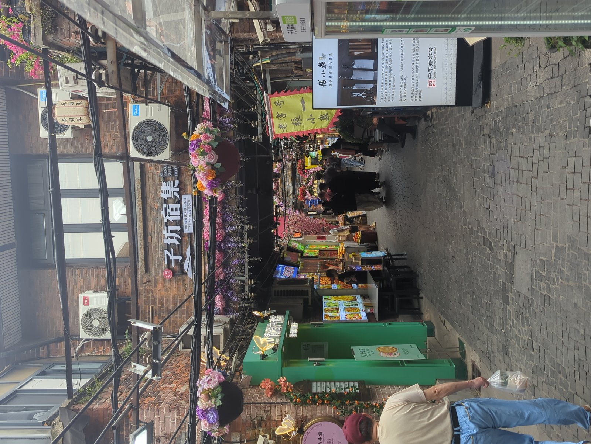
Tianzi Fang — the maze of artisan shops and souvenirs
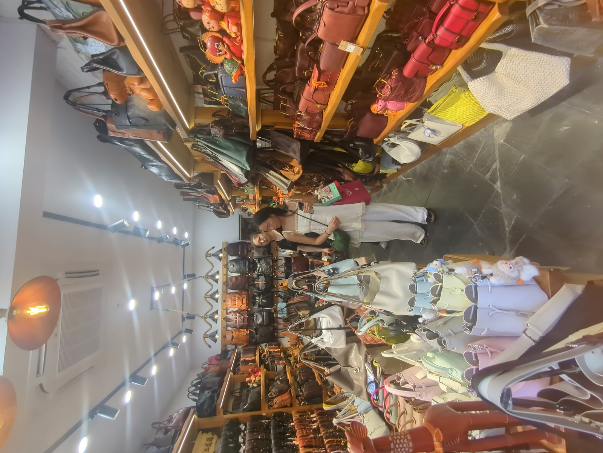
Silk scarves and perfumes in the Tianzi Fang alleys
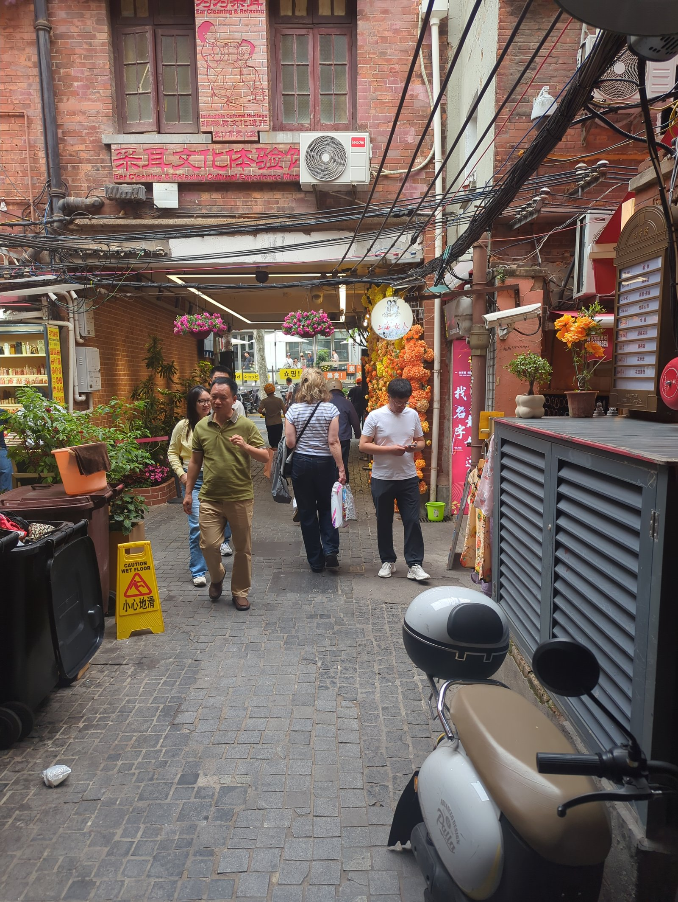
On Fu Road — tree-lined upscale Shanghai
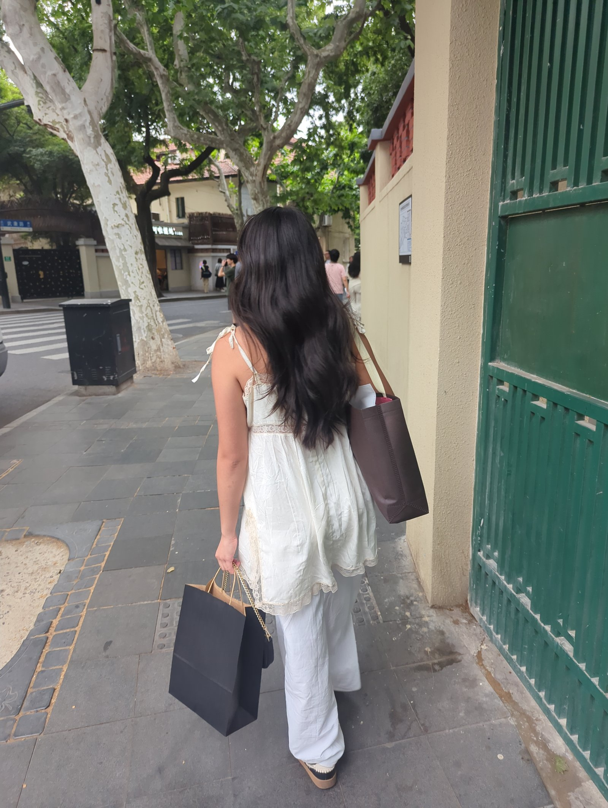
Yu Yuan Gardens — koi fish and historic tea houseThe Bund — colonial architecture along the river
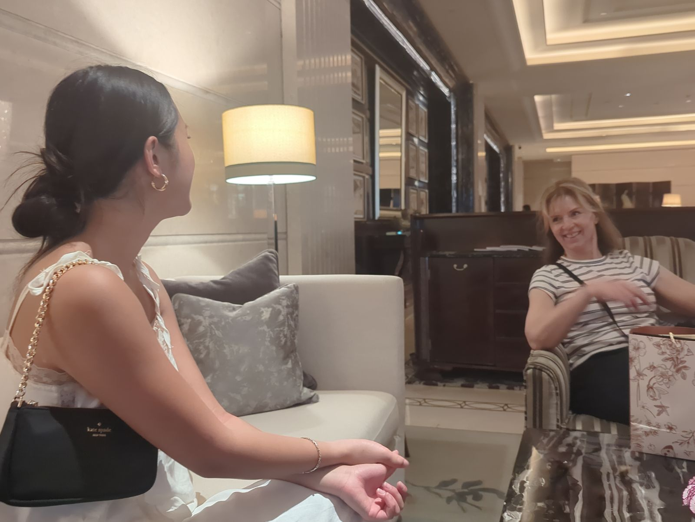
Shanghai dinner — seven plates of traditional cuisine
⭐ Highlight of the Day
Best Moment
[The single thing you'll remember most from this day. One sentence to one paragraph.]
🔗 Related Pages
Shanghai — city wiki page
Wassam International Hotel, Shanghai — where we stayed
🌤️ Historical Weather Report:
Shanghai, China — May 20, 2026
High: 27°C (81°F) / Low: 19°C (66°F)
Conditions: Cloudy morning with low ceiling, clearing to sunny by afternoon
Humidity: 65% | Wind: 11 km/h (SE) | Precipitation: 0 mm
[Source: climatological norms; China Meteorological Administration]
Companions: Bruce, Lois, Annalise
📝 What We Did
Speaker 1 0:00
I guess you just turned a new one. All
Speaker 2 0:03
right, this is part six, Shanghai Day. So we got up, got on, walked to the subway station again through the river walk. This is the second day we did the river walk to the subway station, and then we got to the bund area and crossed underneath the river or got to the Apple Store area, and then we made our way to the Pearl Orient, Pearl bought tickets to go up to the observation deck, spend some time in the observation deck and went to the floor that had the tran the glass floor observation deck on the outside, which Annelies walked on, and then we proceeded to the museum floor and then the future Shanghai exhibit, and I'll let you carry on here with
Speaker 1 1:13
so in the morning we had breakfast again at the hotel, and it was Lois's favorite broccoli. We also slept in, we were there at the very end of the time, we were the last people there. It was very nice and relaxed, and we had a.. we really didn't know what we wanted to do exactly, so we headed to the Shanghai Tower in the Boond area, and we, as Lois said, we took the canal to get there and made some changes on the subway and when we got there it was very cloudy, when we came out of the subway we couldn't see the top of the Shanghai building, Shanghai Tower, because it was covered in clouds, so we decided we perhaps we would not go up in the tower. Instead, we went into the mall that was there underground and probably above ground as well, and we walked in the mall a little bit until we came to the Apple Store, so we went in the Apple Store and had fun just looking at stuff, and then we came out, Lois got some Starbucks, and Annelies went on a little adventure, and then we, we met back together, and then headed out right when we were at the Apple Store, right across the street was the Oriental Pearl, so we walked up on the walkway that makes this large circular walkway in downtown and we went over the highways and then down to where the Pearl was, and we were able to get tickets to go up, and so that worked really smoothly, and we were able to get in, and we went up to the observation area of the Pearl Tower, and we spent a lot of time just looking around, it was very nice, and the clouds had cleared off, and we could see all of Shanghai, the buildings all the way around, and, and a little bit about the history, because you could see the Boond in all the buildings, and we also then went to a different level where Annelies walked around on the glass bottom observation again, and of course I did not step, Bruce did not step on it at all, and when we were done with that, we went down to the bottom, another level, sorry, of the Shanghai Tao, or of the Oriental Pearl, where they had a future of Shanghai exhibit, which we went in, and it moved very slowly, and it was kind of like a three or 180 degree screen around you that was moving by, and it was talking about all the future things that might be there in Shanghai in the future, kind of a space theme of what the future would look like in Shanghai, and we walked through that. It was very interesting, and after we were done with that, we went down another level of the Pearl, and this was the bottom level, and there were shops and things there, and there was also a museum, which we weren't sure. We did some shopping, and then we went in the museum, not sure if this was really the Shanghai Museum, or would be very nice. As it turned out, it was very nice, and we were able to, and it was very large, and we walked through and saw all kinds of exhibits about Shanghai and its history and the colonial powers that were there, history, and there are lots of just little exhibits that were just fascinating, and so we spent quite a bit of time walking through the museum, and then when we were done with the museum, we got some candy at the White Rabbit, and I'll pause after that we walked back over to the mall and got back in the subway and went under the river and back to the East Nanjing Road exit subway exit, so we came up on Nanjing Road again, and we did a little bit of shopping, so we went to the Huawei store and walked around, and that was very interesting. We sat in some electric cars, and we walked down the street and I think Anneliese was Anneliese was wanting to buy her her special shoes, her tigers, and we stopped and she tried them on and while while Lois and Anneliese were in the store, Bruce was accosted by a man who wanted to show him where he could find cheap bags, and so he waited for a long time, probably 30 minutes at least, for us to come out of the store, and then he took us to his shop, and I looked for a bag, but the prices were pretty high for pretty cheap looking stuff, in my opinion, so I wasn't very interested. I purchased some gifts, postcards, Lois looked at buying a real leather coach bag, but she decided against it, and then we walked over to the H&M store to find a bag for Lois, just to make sure we had enough to be able to carry all our gifts back onto the plane, so we found a bag and some socks at the H&M store, and when we finished at H&M, we were very tired, and we just wanted to get something to eat, so we went straight to the Five Guys.
Speaker 2 7:59
Oh, that's right, we didn't have much. We went to Five Guys.
Speaker 1 8:02
Yes, and at Five Guys, we had a big hamburger and lots of fries, and we got really full, and it was wonderful. And we, Annelies, thought that the help was rather rude and short with us at by that time we were getting pretty tired because it had been a long day and Bruce wanted to go back and see the lights from the river at night because we didn't quite get to see that the previous night so I convinced everyone to walk back that way, and we also went in a very large mall. Not sure what we were looking for, but along the way was a very large mall, and we were looking for a bathroom, and we found it, but it was all upscale mall, just a very large building on the Boone, but once we walked in the door, it was a multi-store mall inside, and just full of all of high-end stores, just like the one in Hong Kong, and just like the one in the Pudong district that we were at earlier in the day, so we found the bathroom, and by then it was dark, and we were headed to go see the lights, but we were just too tired, so Bruce ran on a little bit ahead and took some video through the crowds. There were lots of crowds of people, just a mass of people along the river, but it was very spectacular, the lights in all directions, and the boon in particular, and we, Bruce, ran back, and then we headed as quickly as we could back to the East Nanjing Station, so we could head home, we with just a small stop to get some ice cream along the way, which turned out to be not very good ice cream. So back again in the East Nanjing Road metro, we took back to Beijing Ling Road, Bai Jianling Road, and then we walked back to the family mart and got some ice cream and headed back to our room to sleep. One of the concerns we had was getting being able to get our DD driver, because it was a long drive early in the morning, 530 in the morning, to back to the catch our flight to Taipei the next morning, but thankfully Lois was able to get that working on her phone earlier in the day before we left, and we had it all scheduled so that early in the morning the next morning our DD driver would be there to pick us up, and we would head to the airport to go to Taipei.
📸 Photos
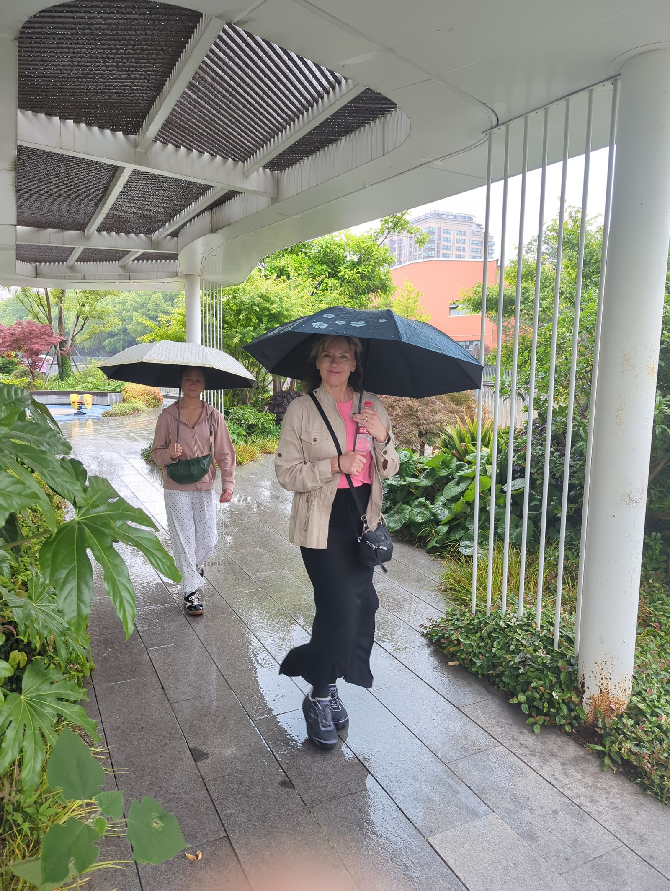
Oriental Pearl Tower — observation deck views
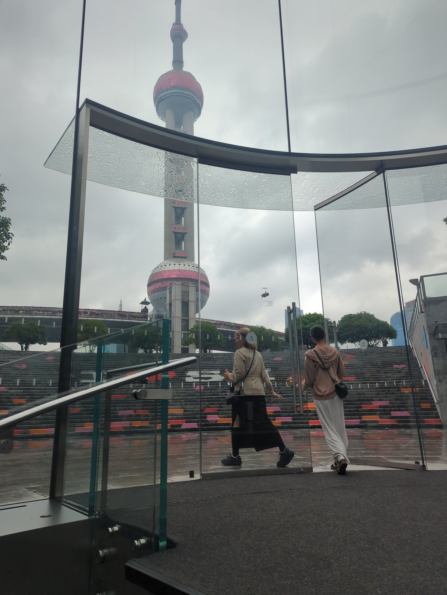
Annalise on the glass-bottom observation deck
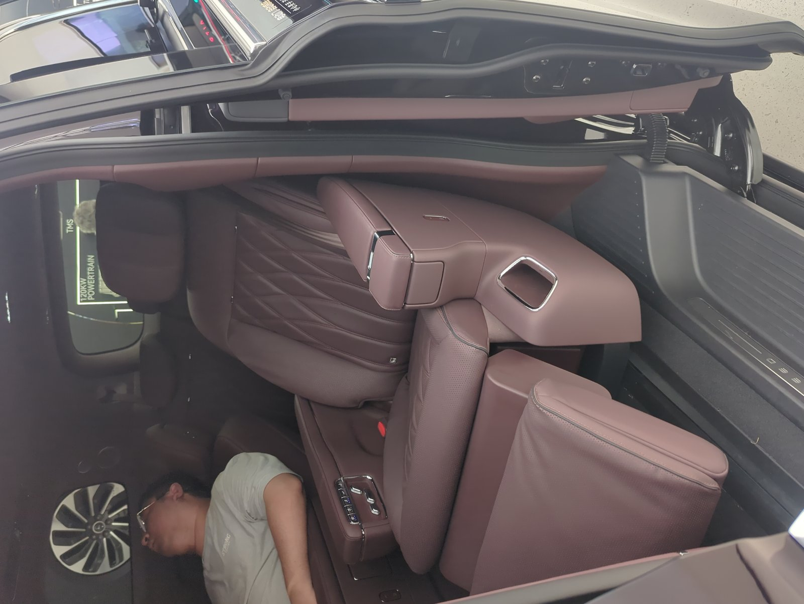
Five Guys lunch — a taste of home in Shanghai
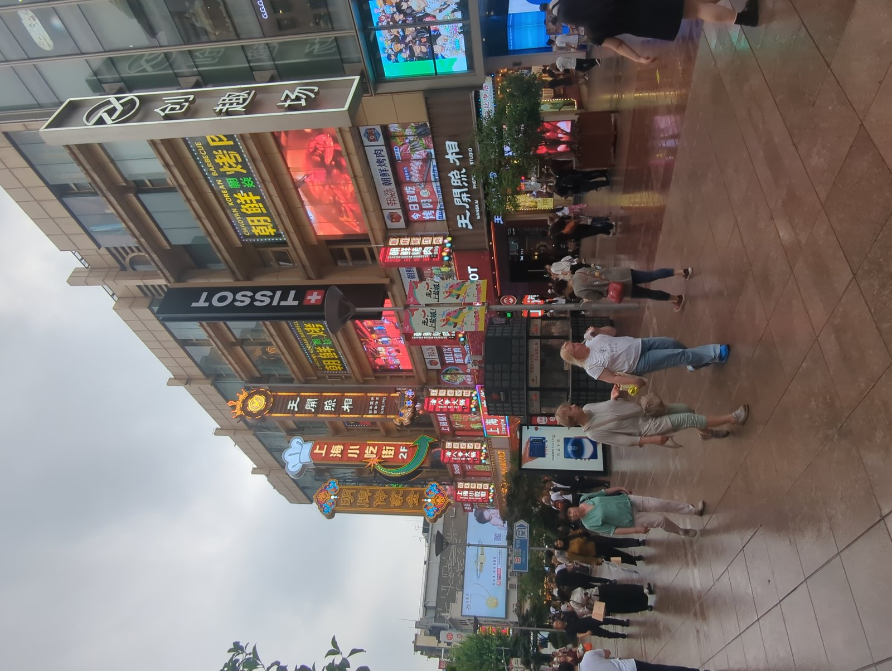
The Bund at night — spectacular river lights
Video: Bund night lights across the Huangpu River
⭐ Highlight of the Day
Best Moment
[The single thing you'll remember most from this day. One sentence to one paragraph.]
🔗 Related Pages
Shanghai — city wiki page
Wassam International Hotel, Shanghai — where we stayed
🌤️ Historical Weather Report:
Taipei, Taiwan — May 21, 2026
High: 29°C (84°F) / Low: 23°C (73°F)
Conditions: Partly cloudy, warm and muggy, typical late-spring Taipei weather
Humidity: 80% | Wind: 12 km/h (ESE) | Precipitation: 0 mm
[Source: climatological norms; Taiwan Central Weather Bureau]
Companions: Bruce, Lois, Annalise
📝 What We Did
Unknown 0:01
You want to start it, Anna. No, I'm busy paying my cat.
Unknown 0:07
Okay, this is day or note seven. This is the day we travel from Shanghai to Taipei.
Unknown 0:16
Note eight, so we woke up early in the morning, and went out on the curb, waiting for our DD driver, he to show up.
Unknown 0:28
He did show up. He did show.
Unknown 0:33
Sorry, that was a bad joke.
Unknown 0:37
His name was he, and he.. I don't believe he said a single word to us. He had all the information in his, in the app already about where we were going, and we headed there, got in the car, and headed there. It was a long drive, but we got there safely into the right terminal, and he dropped us off, so we went in again to rock. We once again were going to fly on Junia Airlines, and so we went in and checked our bags in the morning, and I'm a little confused as to what day was what, but we didn't have any problems checking in, did we?
Unknown 1:22
No, we we checked through, checked our bags, and then headed to the what they called the transfer section, which was transferring from China to Taiwan. They didn't consider it as an international, and we were part of the domestic wing, but not a separate part of it, so we went downstairs and we waited in this room, and while we were waiting, Anneliese and Bruce went for a little walk, and we came back, we went for a walk to get coffee, I believe, for Lois, is that correct? Yes, yeah, we got some breakfast too, because it was so early, we hadn't had anything to eat, so we got some breakfast, came back, and then Bruce wanted to go out again and spend the rest of the money that was in RMB cash and get some extra change for gifts, and buy Lois a little purse that he saw while he was walking earlier, so by the time that was done Lois was
Unknown 2:45
very nervous because the line was already starting to board the plane, and Bruce and Annelies weren't anywhere in sight, so but thankfully they showed up at just the right time. There was a long line, and we got in line to get on Junia Airlines.
Unknown 3:10
This time we boarded a bus once we went through the line, and the bus took us around the airport, seemingly not knowing where it was going, we didn't know where we were going, but eventually we did come to a Junia plane, and we stopped and got out and walked and bordered and climbed the stairs and boarded the plane.
Unknown 3:40
This plane was much like the others, pink and purple, and the stewardess were all dressed the same, looked the same, and had the same hairstyle.
Unknown 3:51
This plane was a little bit larger for the flight to Taipei. There was more leg room, and the flight went very quickly, so we waited on the ground almost as long as we were in the air, and we flew to from Shanghai to Taipei to
Unknown 4:13
forgot the name of it, the Taipei Airline, Taipei Airport, which is quite a ways from the city of Taipei, so we arrived in the morning. It was still morning, and we, it was a little bit muggier in Taipei, but a different feel than Shanghai.
Unknown 4:36
Once again, just a little
Unknown 4:41
hard to describe exactly, but people looked a little different, and were a little different, and dressed differently, and we went through the airport very easily through customs, and we had to fill out a paper for entering Taipei, and that was all done on our phones, so we were able to stop at a little booth and scan a QR code and fill in the paperwork. Annalise came to the rescue because Bruce's phone, for some reason, was not working at all, and she was able to sign in both herself and Bruce, while Lois signed in as well. We then went through customs. I forgot to mention that going through customs in Shanghai was actually pretty deep entail, we, we had to go through a couple of levels, and as we entered, we were, as we left, we were interviewed about what we had done in China, why we were in China.
Unknown 5:57
Bruce and Lois went through the line fairly quickly, but Annelise was still there.
Unknown 6:04
The lady interviewing her was a little confused as to what she was doing in China, and what her did. She asked you to write your Chinese name. Yes, yes, she asked Annalise to write her Chinese name, and was a little confused when she, when another guard asked me if I was Annelise's father, she turned and then made the connection, or asked if I was her father, and then that was the end of her confusion, she understood, and Annelies went through the line.
Unknown 6:45
So, going into Taiwan, once we had our paperwork done, it was fairly simple. We just moved through the facial scan lines, just like we had done leaving Shanghai, and we were into Taipei.
Unknown 7:03
There were lines in Taipei airport showing us right where to go to our hotel, which was the Hyatt Regency, right at the airport. So, there were lines on the floor, which was very nice. We did have to get some cash, so we had to stop at the money changer before we got out of the airport and just get some cash at the counter, so we exchanged actually a larger bill of RMB and exchanged it into Taiwan dollars, new Taiwan dollars, so then we went followed the line to the bus for our air for our hotel, and it took us downstairs to the basement and just a waiting area where we were able to find the spot where our bus was going to arrive, and we sat down and relaxed a little bit, and turned around and noticed that our bus was already there, so our bus then took us to the hotel, the Hyatt Regency, where we were able to check in, even though I believe it was around noon, or maybe even before, so we were able to check into our room at the Hyatt Regency and unload all our bags, which we had picked up and checked through to Taiwan and put everything in the room.
Unknown 8:49
There was a little confusion for Bruce, because we had paid for everything, and at the desk, when we checked in, the lady had said that she was going to charge a couple $100 more to add Annalise to the room, but wasn't until we got to the room and I realized that a couple $100 new Taiwan dollars was only like $20 so it was no problem at all.
Unknown 9:25
Once we had dropped off all our stuff, we had plans to go to the Taipei 101 first. So we fortunately were able to get onto the metro station right by our hotel. Our hotel had its own metro stop, and we went down in the metro stop, and there was somebody there who spoke fairly decent English, who told us that we should just use our credit cards to take the airport express all the way to Taiwan to Taipei main station, and we could then just use our credit cards to check out, so we did that, and that was successful, as long as we all use different credit cards.
Unknown 10:11
So we were able to check in, take the airport express to Taipei, which was a pretty trip. We started, there were two trains, one that goes a little slower and makes more stops, and interspersed are trains that go faster and are more direct. We started on the slow train, making several stops, and then at one of the stops we saw the fast train on the other platform, and so we jumped out and ran and got on the express train and hit, which was fortunate, because we probably saved a lot of time and wouldn't have been able to get all the things done that we did get done, so we headed on the express into the Taipei main train station, probably 40 miles from the airport, once we got there, it was a very large station. Annalise used her phone and her navigation to lead us to the metro line we were looking for, that would take us to the Taipei 101 building, and she was able to find it, and, and after walking probably a mile or two, we, we arrived at that train and were able to get on, but we could not use our credit cards anymore. So, like all the other stations in Taipei, there was a person manning the desk, and they spoke English well enough that we could communicate, so we were able to then just buy tokens to put in the subway, and each one was only a few dollars, and we were had to buy them at every stop from there then on, so we each got a token, a little slug that we put in the turnstile, and were able to get on the metro, so we headed down the metro past
Unknown 12:16
the Chiang Kai-shek memorial, which was on our list of things to see, the changing of the guard, but we were worried about getting to our Taipei 101 building on time, because we had tickets for 430 to ride the elevator up to the observation deck, so we went straight there to the Taipei 101 We had an interesting moment on the train when the train came to a stop and they said everybody out, the train stops here, but we weren't at our destination yet, so we all got out and the train went on without us, and pretty soon another train came on the same line to take us to our destination, so they were just emptying the train for some reason.
Unknown 13:06
When we got to Taipei 101
Unknown 13:10
we went in the mall, which is always under every large building that we had visited in China, and we were able to go down to the bottom to a food court type area to get something to eat. We found a Korean
Unknown 13:28
restaurant with bimbop, and we ordered that, and it was very, very good food, hot and very nice, but we had to eat it quickly and order to try to find the observation
Unknown 13:52
deck entrance, which we were able to do just in time, so we got there at 430 and went up to the top of the Taipei 101 When we got to the top, we saw the special presentation of the of the month, which was the Monday Bruce exhibit of different office scenes where the rabbit Bruce is kind of a grumpy rabbit and tired of working in the office and has some pearls of wisdom to share,
Unknown 14:38
so we we took our time looking around the 101 It was very interesting in a very beautiful view all the way around it at the observation deck. Annelies and Lois tried some fruit covered in sugar. What do you call that, Anneliese?
Unknown 14:59
Tong Hulu, which was actually very interesting, covered in sugar cane, I believe, right? Yes, yeah.
Unknown 15:07
And did you try anything else? You did. What else did you try?
Unknown 15:13
Okay, so then we, then we went to the,
Unknown 15:21
I believe a 98th floor, 89th floor exhibit of the damper that hangs inside the type A 101 and that was very interesting. There were lots of tour groups along the way that we ran into from different countries and observing how the damper works and, and just seeing it, so I believe that once we finished that, we headed straight down, but I don't remember, I believe actually we went to another level and viewed the damper, and then we took the elevator down, the elevator in the Taipei 101 was very interesting, because it showed you how fast it was going, and it would, it went up to like 100 meters a second or 1000 meters a minute, or something like that, that it maxed out at, and it went much faster going up than it did going down, which was interesting, but even so, going 100 stories only took a few seconds. It wasn't very long at all. Yeah, 15 seconds, maybe. So we headed down to the bottom of the tower, and at that point we were, we headed into the subway again,
Unknown 16:47
and we headed straight back towards the Shilin Market, and once again, when we entered the subway, we had to go the Shilin Night Market, we had to go buy our slugs at the desk, so that we could make the next connection, which we did, and we had to tell them where we were going, and they were once again just $1 to each.
Unknown 17:12
And then we headed to the Shylin Night Market, so we exited there, and we didn't really know where we were going, we walked kind of the wrong direction, and then figured out, got our bearings, and we were supposed to be there at 6o'clock by the earliest. Yes, Annelies led us in the right direction, and we arrived just about 6pm right at the time when they say the market starts, so it was just getting started, and we walked down just a couple of streets, but it was interesting. We were able to find our authentic Taiwanese boba tea, which we were looking for, and we stopped and had the milk tea, which I thought was very good, and filling, and then we walked a little bit more again, and decided that we were tired and ready to go back to the hotel. It had been a long day, so on our way out, thankfully, we were able to find a dumpling place. What do you call them?
Unknown 18:22
I don't know, pork dumplings, yeah, pork boughs, and are they called soup boughs?
Unknown 18:30
Anyway, we were able to find them, and this was a very authentic store where they were just working hard, putting them out, and there was lines, people stopping by, and it had a little plaque that said Michelin rated on it, and they, we each got one, and they were just wonderful, right out of the oven, or right out of the pot, and then we headed back towards the Cheyenne Market Metro stop, and we stopped at a convenience store, and we got some, probably a large family mart, and we got some
Unknown 19:15
Haagen-Dazs ice cream bars and other bars, and I don't think Annalise wanted any. She didn't eat ice cream while we were there, so we got on the subway and headed on our long trek back, so we, we had a few stops to get back to the Taiwan main train station, and then from there we were able to to walk again a mile or so in the subway and then find the airport express terminal and then take use our credit cards again to enter that and take the express back to the airport and the airport hotel exit, so we were tired, and we got on the train, and we had some nice comfortable seats, and we sat down and really relaxed, kind of forgot where we were for a little while.
Unknown 20:18
I'm speaking for Bruce's perspective, and just relaxed, knowing that we were almost done with our trip.
Unknown 20:26
So, we had one little bit of excitement left as we entered towards the airport. 30 minutes later, we
Unknown 20:38
came to a stop, and it said Terminal One exit, and for some reason thought that this was our exit, where we had to move over to the slower train, so it would take us to the to our airport exit, and that turned to be not correct, as we got off the train, I realized that was not correct. So, what I said, 'Let's, that's wrong, let's get back on this train. So I jumped back on quickly with no thought of Lois and Annelies, and Lois followed me and got through the door, and Annelies was not - did not get through the door, so we were standing there watching, looking at Lois, who was on the platform, looking at us, like, what are you doing, and then we, we headed on to the next, so we had a plan that we would stop at the next stop if we got separated, so we went to the next stop and got off, and we're very frantic as to where Annelies was, so we were able to call her, and she said she was all the way to the next station, almost headed back toward Taipei, and but she knew exactly what she was doing and where she was supposed to turn around, so she was able to do that and get back coming in our direction, and meanwhile we waited frantically, waiting, but she gave us some very good direction, so when she said I'm next sitting across from a guy with a red hat, and we saw the red hat in the train, we knew that she was there, so we jumped on the train with her, and we had just one more stop to go till we got to the air, our Hyatt airport exit, and then we really were done with all the drama for our trip, and we headed to our room, but first of all, we stopped and looked at around the air, the Hyatt, just a little bit at their toy. Bruce looked at their toy airplane collection, which was quite amazing.
Unknown 22:59
And then we headed to bed once again, leaving fairly early in the morning the next day.
Unknown 23:07
Do you guys want to add anything? I forgot.
Unknown 23:10
No.
📸 Photos
Shanghai airport — waiting to transfer to Taipei
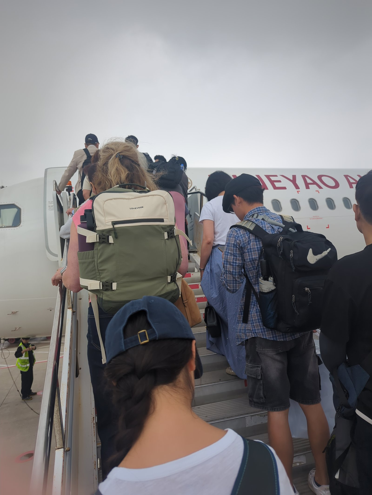
Juneyao Airlines — pink and purple cabin to Taipei
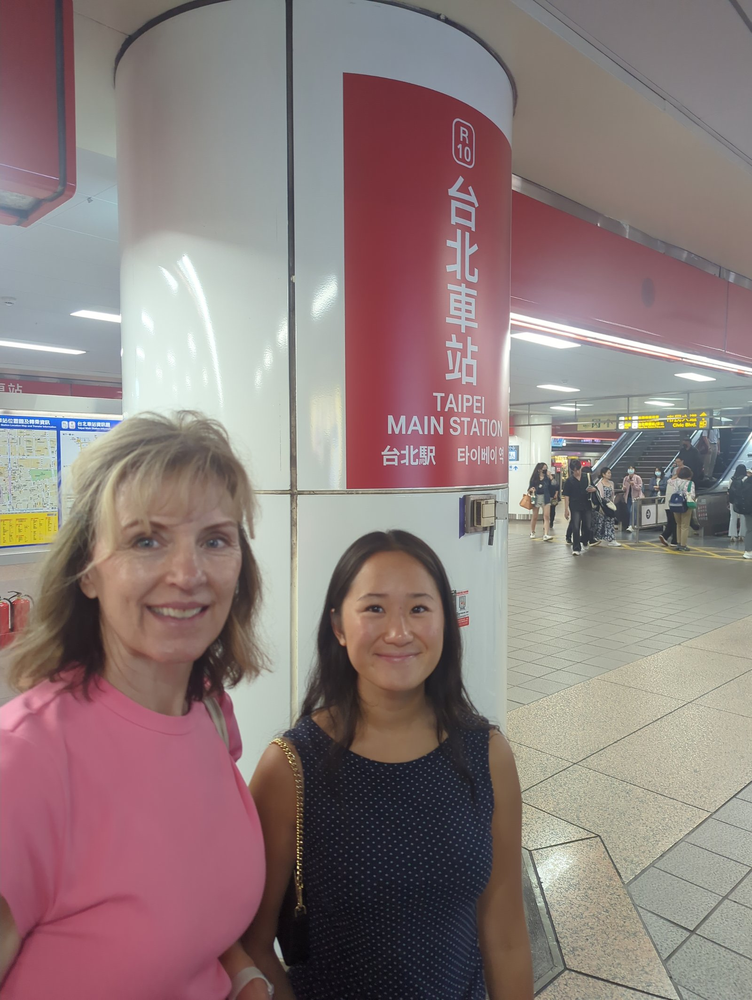
Taipei 101 — observation deck views
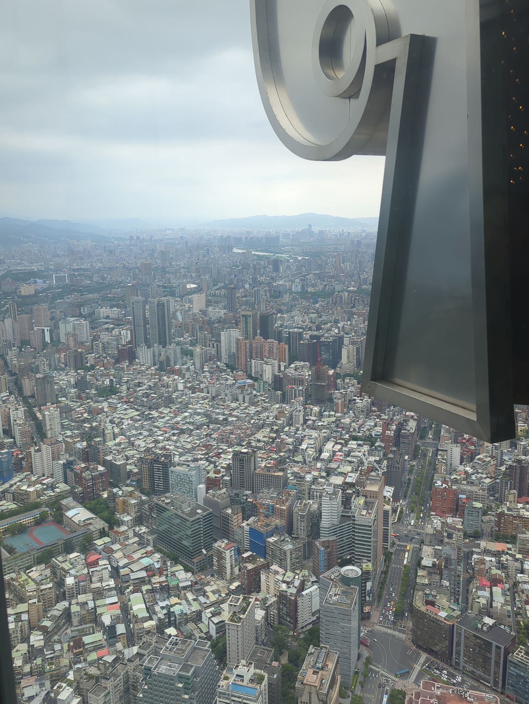
Taipei 101 damper — the massive tuned mass damper
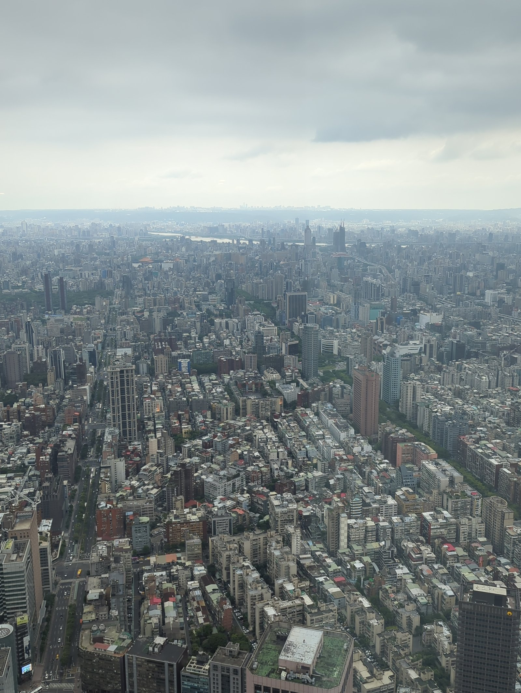
Shilin Night Market — food stalls and boba tea
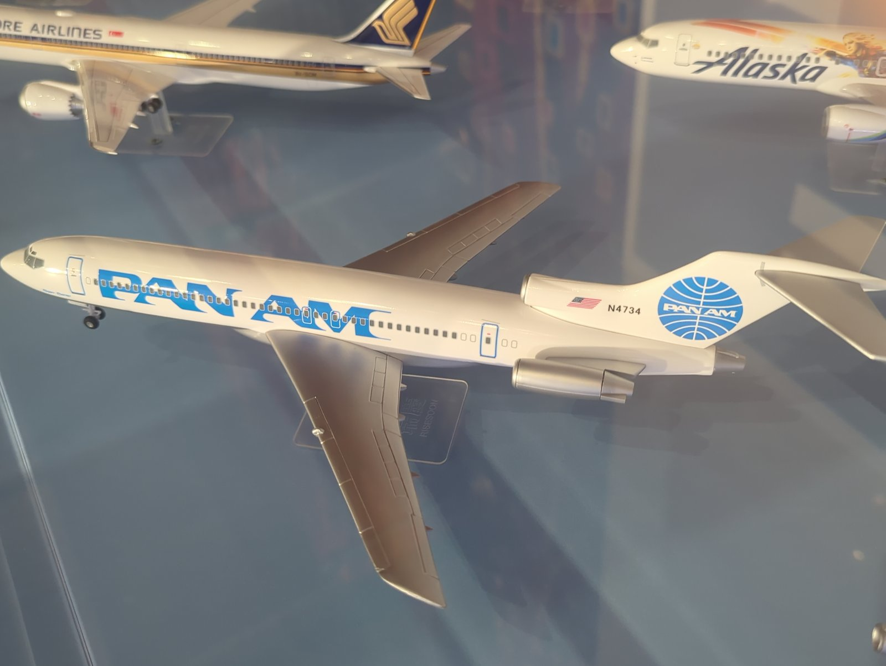
Returning to the Hyatt Regency — the last night
⭐ Highlight of the Day
Best Moment
[The single thing you'll remember most from this day. One sentence to one paragraph.]
🔗 Related Pages
Taipei — city wiki page
Hyatt Regency Taipei (airport hotel) — where we stayed
[Speaker 1 0:00
What's going alright? So the last day of our trip, we woke early in Taipei at our hotel, and we were, we packed up, checked out in, I believe, at 730 or seven, we got on the bus half hour early, 7o'clock and we took the bus to our terminal, yeah, the hotel shuttle to our terminal, and we were able to, there was a long line of people when we got there to Delta, very long line of people, and we got in line, but then someone asked us if we had our, if we were checking our bags, and we said yes, and they sent us to another line, which was much shorter, and we went through the line, but then we had some kind of problem with Lois's bag, not sure what it was, but we had to go to the security room and answer some questions, and then everything was fine, and we could go back to the check-in, and we were able to check in the bag and get ready for our trip, we had not eaten any breakfast, so we went through security fairly easily, and then when we entered into the concourse, it was much nicer. In fact, the whole thing was much nicer than the then where we entered the previous day to Taipei. This was all a new area, and the gates were like themed, so we found our gate, and there were shops everywhere. So we found our gate, which was, I believe, like a rain forest kind of theme. And then we went and found breakfast at a nice cafe, and we ate there, and then we did some shopping for gifts for people, and we were able to find candies and some different things there, all along there were many shops, and so we spent the rest of our Taiwanese monies change and things like that in the vending machines and in the store, and then we were ready to board. It was boarded early, and it was a little confusing because we boarded, we were able to just go down and like pre-board, so they looked at everything first, and then we went downstairs, and then we waited there, and then lined up again, and then checked in, and we're able to just walk right on to the plane and get ready for our flight home. The flight home on Delta wasn't as large a plane as the United plane that we took to Hong Kong, but it was still plenty large, and we had the three seats in the middle this time, instead of the three seats on the side. On our plane was on the way over. I believe there were five seats in the middle, so we had the three seats in the middle, and we were in at the beginning or second row of a section, and it worked out very nicely, and we were able to sleep mostly. So by the time we got on the plane, it was, it was about noon or 11am maybe not quite that late, 1030 and we had just slept the night before, but we all had our meal, and then went to sleep, so we slept off and on as you often do on a trip like that till we arrived in Seattle. When we arrived in Seattle, we got off the plane and we were had to go find our bags. They were not able to check our bags through because we had to go through immigration in Seattle, when we got off the plane, it was cool in Seattle, and there was a beautiful.. as we went walked across, we were able to see a beautiful view of Mount Rainier covered in snow, and that was pretty amazing. And then we then had to go through line, find our luggage, and then go through immigration, answer questions, and then go through security again with our luggage, even though we had never left the airport, so that took a little while, and then we finished that. Then we were able to head down to our gate to Phoenix, where we waited not very long. By that time, we didn't have very long to wait before we boarded our plane to Phoenix, which arrived in Phoenix, I believe, around 12 o'clock. So this was all the same day, the 22nd We left on the 22nd at 1030 We arrived and 22nd at like 9o'clock or earlier. So we went back in time and then boarded the plane for Phoenix, and landed in Phoenix all around, like just right after noon. So, once we arrived in Phoenix, we, we ended our journey the way we started it. We took a Waymo to Annelise's house and picked up our car and headed home
Unknown 6:03
I.
📸 Photos
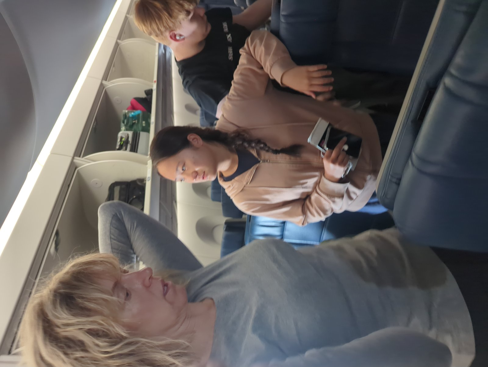
Taipei airport — the rainforest-themed gate before departure
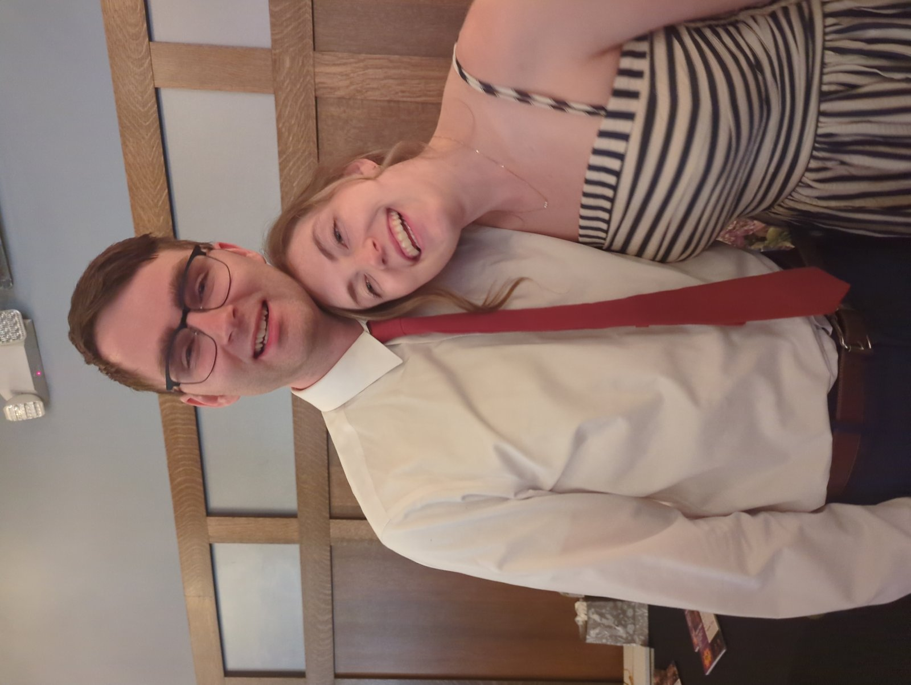
Homeward bound — reflecting on an incredible journey
⭐ Highlight of the Day
Best Moment
[The single thing you'll remember most from this day. One sentence to one paragraph.]